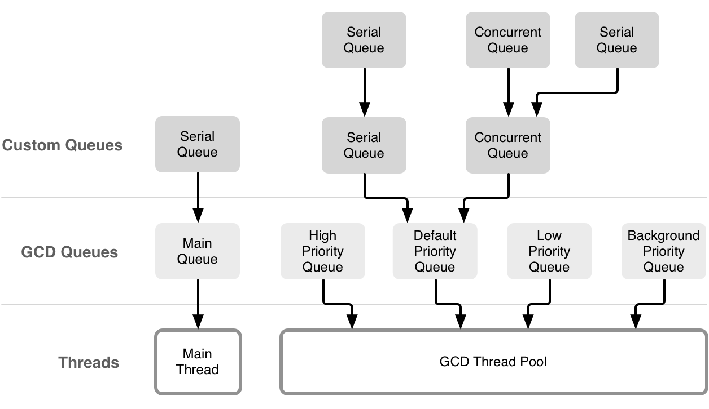
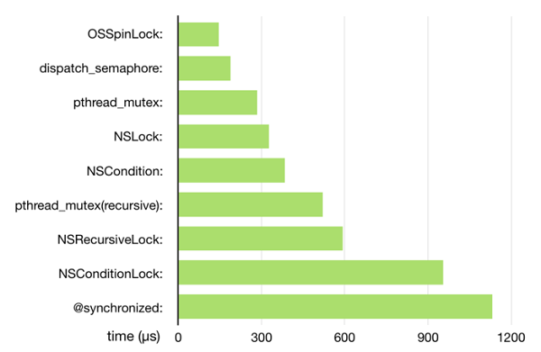

<!DOCTYPE html>
<!--[if IEMobile 7 ]><html class="no-js iem7"><![endif]-->
<!--[if lt IE 9]><html class="no-js lte-ie8"><![endif]-->
<!--[if (gt IE 8)|(gt IEMobile 7)|!(IEMobile)|!(IE)]><!--><html class="no-js"><!--<![endif]-->
<head>
  <meta charset="utf-8">
  <title>
    
  iOS基础概念 - 北哥传奇
  

  </title>
  <meta name="author" content="">
  <meta name="description" content="">

  <meta name="HandheldFriendly" content="True">
  <meta name="MobileOptimized" content="320">
  <meta name="viewport" content="width=device-width, initial-scale=1">
  
  <link href="asset/css/screen.css" media="screen, projection" rel="stylesheet" type="text/css">
  <link href="atom.xml" rel="alternate" title="北哥传奇" type="application/atom+xml">
  <script src="asset/js/modernizr-2.0.js"></script>
  <script src="asset/js/jquery.min.js"></script>
  <script src="asset/highlightjs/highlight.pack.js"></script>
  <link href="asset/highlightjs/styles/solarized_light.css" media="screen, projection" rel="stylesheet" type="text/css">
  <script>hljs.initHighlightingOnLoad();</script>

  <style type="text/css">
  .cat-children-p{ padding: 6px 0px;}
  .hljs{background: none;}
  </style>
  <script type="text/javascript">
  var isAddSildbar = true;
  </script>
  <script src="asset/js/octopress.js" type="text/javascript"></script>
</head>
<script type="text/javascript">
//链接新开窗口
function addBlankTargetForLinks () {
  $('a[href^="http"]').each(function(){
      $(this).attr('target', '_blank');
  });
}
$(document).ready(function(event) {
  addBlankTargetForLinks();
});
</script>
<body   >
  <header role="banner"><hgroup>
  <h1><a href="index.html">北哥传奇</a></h1>
  
    <h2></h2>
  
</hgroup>

</header>
  <nav role="navigation"><ul class="subscription" data-subscription="rss">
  <li><a href="atom.xml" rel="subscribe-rss" title="subscribe via RSS">RSS</a></li>
  
</ul>
  
<form action="http://google.com/search" method="get">
  <fieldset role="search">
    <input type="hidden" name="q" value="site:raojunbo.github.io" />
    <input class="search" type="text" name="q" results="0" placeholder="Search"/>
  </fieldset>
</form>
  
<ul class="main-navigation">

  <li id=""><a target="self" href="index.html">Home</a></li>

  <li id=""><a target="_self" href="archives.html">Archives</a></li>

</ul>

</nav>
  <div id="main">
    <div id="content"> 
<div class="blog-index">

	<article>
		 <header>
		  	<h1 class="entry-title"><a href="15462987177847.html">GCD源码核心概念</a></h1>
			<p class="meta"><time datetime="2019-01-01T07:25:17+08:00" 
			pubdate data-updated="true">2019/1/1</time></p>
		 </header>
	  	<div class="entry-content">
		  	
		  	<ul>
<li><p>dispatch_queue<br/>
<br/>
从这张图中能看出，我们创建的dispatch_queue_t实际上是统一由GCD Thread Pool来进行统一管理。他会根据多线程队列设置的Priority，来统一管理执行的优先级。</p></li>
<li><p>dispatch_async<br/>
dispatch_async的流程是用链表保存所有提交的block，然后在底层线程池中，依次取出block并执行；而向主队列提交block则会向主线程的Runloop发送消息并唤醒Runloop，接着会在回调函数中取出block并执行。主线程，专门有个存储queue里需要执行的代码段。当执行到主线程的一个循环玩了后，会从这些队列里拿任务一个一个去执行。</p></li>
</ul>

<blockquote>
<p>当我们调用 dispatch_async(dispatch_get_main_queue(), block) 时，libDispatch 向主线程的 RunLoop 发送消息，RunLoop会被唤醒，并从消息中取得这个 block，并在回调<code>__CFRUNLOOP_IS_SERVICING_THE_MAIN_DISPATCH_QUEUE__()</code> 里执行这个 block</p>
</blockquote>

<ul>
<li>dispatch_sync</li>
</ul>

<blockquote>
<p>理解dispathch_sync 在执行的时候,会<strong>阻塞 上下文 任务</strong>的执行.</p>

<p>造成死锁的情况<br/>
在主线程里执行<code>dispatch_sync(dispatch_main_queue,block);</code>即，上下文环境是主线程，要将任务放到主线程里执行，而且是同步的。dispatch_sync会阻塞当前主线程，又要在主线程里执行block，所以会造成死锁。造成死锁的原因是“当前执行的上下文环境”与“即将要执行的任务也是这个环境&quot;且是同步执行。同步执行不会开启新的线程，会在当前线程里执行。（所以<strong>同步执行将任务放到哪种队列没有关系，任务会在当前线程执行</strong>）哈哈哈。这个三个条件到达时就会死锁。终于弄懂了。</p>
</blockquote>

<p><strong>同步，异步的概念始终与当前执行代码的上下文线程有关系。同步就是讲当前放到其他队列里的任务拿到当前线程执行，执行完后然后返回，继续执行，执行完后返回，继续执行下面的代码。（也就说可以把加到其他队列里的任务拿到当前上下文的线程里去执行）。</strong></p>

<ul>
<li><p>dispatch_semaphore</p></li>
<li><p>dispatch_source<br/>
dispatch_source是BSD系统内核kqueue的包装，kqueue() 生成一个<strong>内核事件队列</strong>，返回该队列的文件描述符。kqueue是在XNU内核中发生各种事件时，在应用程序编程方执行处理的技术。操作dispatch_source实际上就是，通过操作这个 kqueue，进而对内核事件的处理。（哈哈，这个终于可以解释通了）相当于可以监听内核的事件，然后给一个回调，并将回调的代码在指定的线程里面执行。</p>

<p>特别说明：<br/>
这里的dispatch_source与runloop里的source还是有区别的。dispatch_source是   内核事件，runloop的source是端口事件（线程通信的方式），timer事件源（runloop的Timer依赖于线程的runloop）。</p></li>
</ul>

<p>重要理解<br/>
<strong>dispatch_asyn与dispatch_syn，dispatch_queue,任务队列是任务列，只管装任务。至于是在当前上下文线程，还是开启新的线程执行，是由同步还是异步决定的。同步不用新的线程执行，异步有创建新线程的权利。</strong></p>


		</div>

		

	</article>
 
	<article>
		 <header>
		  	<h1 class="entry-title"><a href="15459973166637.html">iOS UI视图相关深入</a></h1>
			<p class="meta"><time datetime="2018-12-28T19:41:56+08:00" 
			pubdate data-updated="true">2018/12/28</time></p>
		 </header>
	  	<div class="entry-content">
		  	
		  	<h2 id="toc_0">iOS事件传递的需要思考的问题</h2>

<pre><code>- (UIView *)hitTest:(CGPoint)point withEvent:(UIEvent *)event {}
最终将这个fitView给了谁?
</code></pre>

<pre><code>- (void)touchesBegan:(NSSet&lt;UITouch *&gt; *)touches withEvent:(UIEvent *)event { }
到底是谁在调用的?
</code></pre>

<blockquote>
<p>经研究，最终将这个view给了UIWindow,UIWindow调用这个fitView得touchBegan方法。</p>
</blockquote>

<p>整个事件首先在Application的事件队列里，然后通过UIWindow在view层级里是先从最后面的子view进行hitTest;找到fitView,然后将touch事件派发给它处理。或者view里有手势会先派发事件给手势处理。手势识别后会取消派发给fitView，UIWindow会调用fitView的touchBegan方法。后面的响应链条上touchBegan会被Pre-responder调用。若果不重写touchBegan，pre-responder会默认递归回溯调用。</p>

<ul>
<li><p>手势识别的内部调用机制?</p></li>
<li><p>TouchBegan，UIControl，手势识别关系?</p></li>
</ul>

<h2 id="toc_1">iOS 布局</h2>

<h3 id="toc_2">Frame布局</h3>

<p>layoutSubviews，不手动调用<br/>
layoutIFNeeded()，在同一个循环里如果需要更新就执行layoutSubviews，然后放回。也就是在layoutIFNeeded里会做判定并且调用本类的layoutSubviews；</p>

<p>setNeedsLayout()，只要告诉标记需要更新界面，在下一个循环里会有一个检测是否需要更新UI布局的一个点来执行layoutSubviews，</p>

<ul>
<li>drawRect
这是一个被重复调用的函数。重复调用会造成内存问题。</li>
</ul>

<h3 id="toc_3">自动布局</h3>

<ol>
<li>更新约束</li>
<li>布局阶段</li>
<li>显示</li>
</ol>

<p>updateConstraints()，不手动调用和layoutSubviews类似<br/>
updateConstraintsIfNeeded()， 和layoutIfNeeded类似<br/>
setNeedsUpdateConstraints()，和setNeedsLayout类似</p>

<p>intrinsicContentSize 属性，根据内容自然得到的属性。</p>

<h3 id="toc_4">视图布局更新与runloop的关系</h3>


		</div>

		

	</article>
 
	<article>
		 <header>
		  	<h1 class="entry-title"><a href="15364733386397.html">GCD</a></h1>
			<p class="meta"><time datetime="2018-09-09T14:08:58+08:00" 
			pubdate data-updated="true">2018/9/9</time></p>
		 </header>
	  	<div class="entry-content">
		  	
		  	<p>本篇内容<br/>
1. 死锁<br/>
2. 异步与同步概念<br/>
3. 串行与并发概念（重点）<br/>
4. dispatch_group<br/>
5. dispatch_barrier_async<br/>
6. 信号量<br/>
6. dispatch_source(重点)  </p>

<h2 id="toc_0">简介</h2>

<p>在单核的CPU里，采用分时的执行，来回在不同线程之间进行切换。在多核的CPU里可以同时多个线程，也可以切换线程。这样就实现多线程。</p>

<p>多线程带来的问题<br/>
数据竞争：多个线程更新相同的资源<br/>
死锁：线程之间相互等待<br/>
消耗大量内存：太多线程会消耗大量内存</p>

<h2 id="toc_1">死锁</h2>

<p>在GCD中，以同步分发的方式非常容易出现死锁。死锁的本质资源的相互等待。异步调用不会产生死锁。</p>

<pre><code>  dispatch_queue_t queueA;
    dispatch_sync(queueA, ^{
        dispatch_sync(queueA, ^{
            [self foo];
        });
    });
    /*
    一旦进入第二个dispatch_sync就会死锁
     它们两个在同一个线程里执行外面的正在执行，第二个会等待外面的执行完，而第二个永远都不会执行完。
     */
</code></pre>

<h2 id="toc_2">队列</h2>

<p>同步队列只是在执行任务时，顺序的从对列里去任务。在一个任务没有完时不会执行下一个任务。</p>

<p>并发队列是执行任务时，在一个任务没有执行完，可以去拿另一个任务去找线程执行。</p>

<h2 id="toc_3">异步</h2>

<p>异步操作有开启线程的权利。<br/>
同步操作没有开启线程的权利。</p>

<h2 id="toc_4">不同执行方式在不同的队列里执行</h2>

<p>同步异步在并发串行队列里的四种组合<br/>
同步与异步<strong>决定是否开启线程</strong><br/>
串行与并发<strong>决定拿任务方式</strong><br/>
任务时需要线程去执行的。也就时需要考虑，有线程没任务，有任务没线程去执行的情况。</p>

<ul>
<li>同步执行 串行队列
因为是同步，不会从线程池里拿线程执行，会在当前线程里执行下一个任务（要在当前任务执行完后）。即若果在主线程里同步执行任务。会出现<strong>死锁</strong>。</li>
</ul>

<pre><code> /*
     死锁
     */
    dispatch_queue_t queue = dispatch_get_main_queue();
    dispatch_sync(queue, ^{
        NSLog(@&quot;%@&quot;,[NSThread currentThread]);
    });
</code></pre>

<pre><code>- (void)gcdDemo1 {
    //1.创建串行队列
    dispatch_queue_t q = dispatch_queue_create(&quot;demo1_seral&quot;, DISPATCH_QUEUE_SERIAL);
    
    //2.同步执行任务
     for (int i =0; i&lt; 20; i++) {
         dispatch_sync(q, ^{
        NSLog(@&quot;demo1 %@&quot;,[NSThread currentThread]);
         });
     }
}
</code></pre>

<ul>
<li>同步执行 并发队列
因为是同步，不会开启线程，因为是并发队列，拿任务可以并发，但没有线程执行，所有还是一个一个执行</li>
</ul>

<pre><code> //1.创建串行队列
    dispatch_queue_t q = dispatch_queue_create(&quot;demo4_seral&quot;, DISPATCH_QUEUE_CONCURRENT);
    //2.同步执行任务
    for (int i =0; i&lt; 20; i++) {
        dispatch_sync(q, ^{
            NSLog(@&quot;demo3+%@, %@&quot;,@(i),[NSThread currentThread]);
        });
    }
    NSLog(@&quot;come here&quot;);
</code></pre>

<ul>
<li>异步执行 串行队列
因为是异步，可以去线程池里拿线程执行。当前是串行队列，要等一个任务执行完后才去拿下一个任务。所以还是一个一个执行</li>
</ul>

<pre><code>- (void)gcdDemo2 {
    //1.创建串行队列
    dispatch_queue_t q = dispatch_queue_create(&quot;demo2_seral&quot;, DISPATCH_QUEUE_SERIAL);
    
    //2.同步执行任务
    for (int i =0; i&lt; 20; i++) {
        dispatch_async(q, ^{
            NSLog(@&quot;demo2+%@, %@&quot;,@(i),[NSThread currentThread]);
        });
    }
    NSLog(@&quot;come here&quot;);
}
</code></pre>

<ul>
<li>异步执行 并发队列
因为是异步，可以去线程池中拿线程执行。当前是并发队列。当前任务没有执行完可以去拿下一个任务执行，因为是并发，可以从线程池里拿新的线程去执行这个任务。这时就真正实现了幷发执行。</li>
</ul>

<pre><code>- (void)gcdDemo3 {
    //1.创建串行队列
    dispatch_queue_t q = dispatch_queue_create(&quot;demo3_seral&quot;, DISPATCH_QUEUE_CONCURRENT);
    
    //2.同步执行任务
    for (int i =0; i&lt; 20; i++) {
        dispatch_async(q, ^{
            NSLog(@&quot;demo3+%@, %@&quot;,@(i),[NSThread currentThread]);
        });
    }
    NSLog(@&quot;come here&quot;);
}
</code></pre>

<ul>
<li>应用（如果将这个例子理解了，就真正理解的同步异步执行与串行并发对列）
指定一个同步任务，让所有异步任务等待同步任务执行完后才执行。
解决方法：
在一个并发队列里先执行加入这个同步任务，在加入后面两个异步任务。因为是同步任务在前，不会有开启多余的线程去执行后面的任务。当第一个执行完，执行到第二个时候，是异步的，可以开启线程执行其他的，因为是并发队列，第三个任务有线程可以用来执行。</li>
</ul>

<pre><code>- (void)gcdDemo6 {
    
    dispatch_queue_t loginQueue = dispatch_queue_create(&quot;rao-login-queue&quot;, DISPATCH_QUEUE_CONCURRENT);
    void (^task)(void) = ^(){
        dispatch_sync(loginQueue, ^{
            NSLog(@&quot;用户登录了%@&quot;,[NSThread currentThread]);
        });
        
        dispatch_async(loginQueue, ^{
            NSLog(@&quot;用户支付了%@&quot;,[NSThread currentThread]);
        });
        
        dispatch_async(loginQueue, ^{
            NSLog(@&quot;用户下载了%@&quot;,[NSThread currentThread]);
        });
    };
    dispatch_async(loginQueue, task);
}
</code></pre>

<h2 id="toc_5">dispatch group</h2>

<p>使用场景：在一个对列里并发执行完后，想执行一个操作，就可以用dispatch_group</p>

<pre><code>dispatch_queue_t queue = dispatch_queue_create(&quot;rao-queue&quot;, DISPATCH_QUEUE_CONCURRENT);
    dispatch_group_async(group, queue, ^{
        NSLog(@&quot;down load1%@&quot;,[NSThread currentThread]);
    });
    dispatch_group_async(group, queue, ^{
        NSLog(@&quot;down load2%@&quot;,[NSThread currentThread]);
    });
    dispatch_group_async(group, queue, ^{
         NSLog(@&quot;down load3%@&quot;,[NSThread currentThread]);
    });
    
    //当前面的所有
    dispatch_group_notify(group, queue, ^{
        NSLog(@&quot;所有的都执行完%@&quot;,[NSThread currentThread]);
    });
    
    //在主队列里进行更新
    dispatch_group_notify(group,dispatch_get_main_queue(), ^{
        NSLog(@&quot;所有的都执行完%@&quot;,[NSThread currentThread]);
    });
</code></pre>

<h2 id="toc_6">dispatch_barrier_async</h2>

<p>dispatch_barrier_async等待之前追加的任务执行完后，就会执行这个任务，并且不会执行下一个任务，要等这个任务执行完后，才会并发执行下一个任务。</p>

<pre><code>- (void)viewDidLoad {
    [super viewDidLoad];    
    dispatch_queue_t queue = dispatch_queue_create(&quot;label&quot;, DISPATCH_QUEUE_CONCURRENT);
    static NSInteger readCount = 0;
    void(^read)(void) = ^() {
        NSLog(@&quot;这是read%@&quot;,@(readCount));
      
    };
    void(^write)(void) = ^(){
        readCount++;
        NSLog(@&quot;这是write%@&quot;,@(readCount));
        
    };
    
    dispatch_async(queue, read);
    dispatch_async(queue, read);
    dispatch_async(queue, read);
    dispatch_async(queue, read);
    
    dispatch_barrier_async(queue, write);
    
    dispatch_async(queue, read);
    dispatch_async(queue, read);
    
}
</code></pre>

<h2 id="toc_7">信号量</h2>

<p>NSMutableArray是线程不安全的，当有多个线程同时对数组进行操作的时候可能导致崩溃或数据错误。这里采用的就时信号量，所谓信号量，可以理解成一个数，占有空间时+1，走开始-1；</p>

<pre><code>- (void)viewDidLoad {
    [super viewDidLoad];
    //并发写入数据
    dispatch_queue_t queue  = dispatch_get_global_queue(DISPATCH_QUEUE_PRIORITY_HIGH, 0);
    dispatch_semaphore_t semaphore = dispatch_semaphore_create(1);//创建信号量
    NSMutableArray *array = [[NSMutableArray alloc]init];
    for (int i = 0 ; i&lt;1000; i++) {
        dispatch_async(queue, ^{
            dispatch_semaphore_wait(semaphore, DISPATCH_TIME_FOREVER);//减少信号量
            [array addObject:@(i)];
        });
        dispatch_semaphore_signal(semaphore);//提高信号量
    
}
</code></pre>

<h2 id="toc_8">锁</h2>

<p>锁的部分参考<a href="https://bestswifter.com/ios-lock/">深入理解iOS开发中的锁</a><br/>
<br/>
本图来自ibireme<br/>
- OSSpinLock<br/>
自旋锁的实现原理比较简单，就是死循环。当a线程获得锁以后，b线程想要获取锁就需要等待a线程释放锁。在没有获得锁的期间，b线程会一直处于忙等的状态。如果a线程在临界区的执行时间过长，则b线程会消耗大量的cpu时间，不太划算。所以，自旋锁用在临界区执行时间比较短的环境性能会很高。</p>

<ul>
<li><p>dispatch_semaphore<br/>
dispatch_semaphore实现的原理和自旋锁有点不一样。首先会先将信号量减一，并判断是否大于等于0，如果是，则返回0，并继续执行后续代码，否则，使线程进入睡眠状态，让出cpu时间。直到信号量大于0或者超时，则线程会被重新唤醒执行后续操作。</p></li>
<li><p>pthread_mutex<br/>
pthread_mutex表示互斥锁，和信号量的实现原理类似，也是阻塞线程并进入睡眠，需要进行上下文切换。</p></li>
<li><p>NSLock<br/>
NSLock在内部封装了一个 pthread_mutex，属性为 PTHREAD_MUTEX_ERRORCHECK。</p></li>
<li><p>NSCondition<br/>
NSCondition封装了一个互斥锁和条件变量。互斥锁保证线程安全，条件变量保证执行顺序。</p></li>
<li><p>NSRecursiveLock<br/>
递归锁，pthread_mutex(recursive)的封装。</p></li>
<li><p>@synchronized：<br/>
一个对象层面的锁，锁住了整个对象，底层使用了互斥递归锁来实现。</p></li>
</ul>

<h2 id="toc_9">事件源</h2>

<p>Runloop里我们说过source_t的概念，其实与队列的源是相同的。Runloop提供对源的监控。队列也可以实现对源的监控。且都可以创建自定义源。</p>

<p>理解：dispatch都是主动添加任务到队列中，然而当系统事件发生时，我们希望做一定的工作当监听到系统事件后就会触发一个任务，并自动将其加入队列执行，这里与之前手动添加任务的模式不同，一旦将Diaptach Source与Dispatch Queue关联后，只要监听到系统事件，Dispatch Source就会自动将任务（回调函数）添加到关联的队列中。（这个概念在监听系统事件时做一定的操作时是很有用处的！！！哈哈）</p>

<p>监听事件类型<br/>
     Dispatch Source一共可以监听六类事件，分为11个类型，我们来看看都是什么：</p>

<pre><code> DISPATCH_SOURCE_TYPE_DATA_ADD：属于自定义事件，可以通过dispatch_source_get_data函数获取事件变量数据，在我们自定义的方法中可以调用dispatch_source_merge_data函数向Dispatch Source设置数据，下文中会有详细的演示。     
 DISPATCH_SOURCE_TYPE_DATA_OR：属于自定义事件，用法同上面的类型一样。
DISPATCH_SOURCE_TYPE_MACH_SEND：Mach端口发送事件。
DISPATCH_SOURCE_TYPE_MACH_RECV：Mach端口接收事件。
DISPATCH_SOURCE_TYPE_PROC：与进程相关的事件。
DISPATCH_SOURCE_TYPE_READ：读文件事件。
DISPATCH_SOURCE_TYPE_WRITE：写文件事件。
DISPATCH_SOURCE_TYPE_VNODE：文件属性更改事件。
DISPATCH_SOURCE_TYPE_SIGNAL：接收信号事件。
DISPATCH_SOURCE_TYPE_TIMER：定时器事件。
DISPATCH_SOURCE_TYPE_MEMORYPRESSURE：内存压力事件。  
</code></pre>

<ul>
<li>timer_source 示例</li>
</ul>

<pre><code> dispatch_queue_t queue = dispatch_queue_create(&quot;queue&quot;, DISPATCH_QUEUE_CONCURRENT);
    dispatch_source_t timer = dispatch_source_create(DISPATCH_SOURCE_TYPE_TIMER, 0, 0,queue);
    if(time){
        dispatch_source_set_timer(timer, dispatch_walltime(NULL, 0), 1, 1);
        dispatch_source_set_event_handler(timer, ^{
            
        });
        dispatch_resume(timer);
    }
    
</code></pre>

<ul>
<li>监听度文件读事件</li>
</ul>

<pre><code>dispatch_source_t processContentsOfFile(const char *fileName) {
    //prepare the file for reading
    int fd = open(fileName,O_RDONLY);
    if(fd == -1){
        return NULL;
    }
    
    fcntl(fd,F_SETFL,O_NONBLOCK);
    
    dispatch_queue_t queue = dispatch_get_global_queue(DISPATCH_QUEUE_PRIORITY_DEFAULT, 0);
    dispatch_source_t readSource = dispatch_source_create(DISPATCH_SOURCE_TYPE_READ, fd, 0, queue);
    if(!readSource){
        close(fd);
        return NULL;
    }
    
    dispatch_source_set_event_handler(readSource, ^{
        
        
    });
    return nil;
}
</code></pre>

<h3 id="toc_10">取消dispatch_source</h3>

<p>当设置了Dispatch source对象将一直保持有效状态，除非手动调用dispatch_source_cancel函数来取消它。但取消了dispatch source对象后，将不能再接收到新的事件</p>

<h3 id="toc_11">暂停与恢复dispatch_source</h3>

<p>可以通过使用dispatch_suspend和 dispatch_resume函数来暂停和恢复事件传递给dispatch source对象</p>


		</div>

		

	</article>
 
	<article>
		 <header>
		  	<h1 class="entry-title"><a href="15358111534341.html">Runtime系列二 消息机制</a></h1>
			<p class="meta"><time datetime="2018-09-01T22:12:33+08:00" 
			pubdate data-updated="true">2018/9/1</time></p>
		 </header>
	  	<div class="entry-content">
		  	
		  	<ul>
<li>
<a href="#toc_0">一：方法调用的流程</a>
</li>
<li>
<a href="#toc_1">二 ：消息的转发</a>
<ul>
<li>
<a href="#toc_2">1. 动态方法解析</a>
</li>
<li>
<a href="#toc_3">2. 备用接收者</a>
</li>
<li>
<a href="#toc_4">3. 完整转发</a>
</li>
</ul>
</li>
</ul>


<p>前面讨论了Runtime中对类和对象的处理以及对成员变量与属性的处理。本文将讨论Runtime里的消息机制。</p>

<h2 id="toc_0">一：方法调用的流程</h2>

<p>在Objective-C中，消息直到运行时才绑定到指定的方法实现上。编译器会将消息表达式转换成一个消息函数的调用</p>

<pre><code> RuntimePerson *p = objc_msgSend([RuntimePerson class], @selector(alloc));
    p = objc_msgSend(p, @selector(init));
    [p eat];
    objc_msgSend(p, sel_registerName(&quot;eatFoot:&quot;),@&quot;汉堡&quot;);
</code></pre>

<pre><code>//相应的底层实现(这是上面代码经过编译后)
Class pClass = objc_getClass(&quot;RuntimePerson&quot;);
RuntimePerson *pp  = objc_msgSend(pClass,sel_registerName(&quot;alloc&quot;));
pp = objc_msgSend(pp, sel_registerName(&quot;init&quot;));  
[pp eat];
</code></pre>

<p>objc_msgSend(receiver, selector)<br/>
objc_msgSend(receiver, selector, arg1, arg2, ...)</p>

<h2 id="toc_1">二 ：消息的转发</h2>

<p>当一个对象能接收一个消息时，就会走正常的方法调用流程。但如果一个对象无法接收指定消息时，就会启动所谓”消息转发(message forwarding)“机制<br/>
消息转发机制基本上分为三个步骤：<br/>
动态方法解析<br/>
备用接收者<br/>
完整转发</p>

<h3 id="toc_2">1. 动态方法解析</h3>

<p>对象在接收到未知的消息时，首先会调用所属类的类方法+resolveInstanceMethod:(实例方法)或者+resolveClassMethod:(类方法)。在这个方法中，我们有机会为该未知消息新增一个”处理方法””。不过使用该方法的前提是我们已经实现了该”处理方法”，只需要在运行时通过class_addMethod函数动态添加到类里面就可以了。如下代码所示：</p>

<pre><code>```
+ (BOOL)resolveInstanceMethod:(SEL)sel{
class_addMethod(self, sel, (IMP)hh, &quot;v@:@&quot;);
</code></pre>

<p>return [super resolveInstanceMethod:sel];<br/>
    }</p>

<pre><code>void hh(id obj,SEL sel,NSString *objc){
NSLog(@&quot;我来了%@,%@,%@&quot;,obj,sel,objc);
}
```
</code></pre>

<h3 id="toc_3">2. 备用接收者</h3>

<p>如果在上一步无法处理消息，则Runtime会继续调以下方法：</p>

<pre><code>- (id)forwardingTargetForSelector:(SEL)aSelector
</code></pre>

<p>如果一个对象实现了这个方法，并返回一个非nil的结果，则这个对象会作为消息的新接收者，且消息会被分发到这个对象</p>

<h3 id="toc_4">3. 完整转发</h3>

<p>如果在上一步还不能处理未知消息，则唯一能做的就是启用完整的消息转发机制了。此时会调用以下方法：</p>

<pre><code>- (void)forwardInvocation:(NSInvocation *)anInvocation

</code></pre>

<p>还有一个很重要的问题，我们必须重写以下方法：</p>

<pre><code>- (NSMethodSignature *)methodSignatureForSelector:(SEL)aSelector
</code></pre>

<pre><code>- (NSMethodSignature *)methodSignatureForSelector:(SEL)aSelector {
    NSMethodSignature *signature = [super methodSignatureForSelector:aSelector];
    if (!signature) {
        if ([SUTRuntimeMethodHelper instancesRespondToSelector:aSelector]) {
            signature = [SUTRuntimeMethodHelper instanceMethodSignatureForSelector:aSelector];
        }
    }
    return signature;
}
- (void)forwardInvocation:(NSInvocation *)anInvocation {
    if ([SUTRuntimeMethodHelper instancesRespondToSelector:anInvocation.selector]) {
        [anInvocation invokeWithTarget:_helper];
    }
}
</code></pre>


		</div>

		

	</article>
 
	<article>
		 <header>
		  	<h1 class="entry-title"><a href="15351908674819.html">Runtime系列一 Objective-C对象模型</a></h1>
			<p class="meta"><time datetime="2018-08-25T17:54:27+08:00" 
			pubdate data-updated="true">2018/8/25</time></p>
		 </header>
	  	<div class="entry-content">
		  	
		  	<ul>
<li>
<a href="#toc_0">一：前言</a>
</li>
<li>
<a href="#toc_1">二：NSObject类的实现</a>
</li>
<li>
<a href="#toc_2">三：NSObject对象的表示objc_object</a>
<ul>
<li>
<a href="#toc_3">NSObject是如何根据类创建对象的？这里有很多疑问。？？？？</a>
</li>
</ul>
</li>
<li>
<a href="#toc_4">四：元类（实例对象，类对象，元类之间的关系）</a>
</li>
<li>
<a href="#toc_5">六：Runtime几个术语的结构分析</a>
<ul>
<li>
<a href="#toc_6">SEL</a>
</li>
<li>
<a href="#toc_7">id</a>
</li>
<li>
<a href="#toc_8">Method</a>
</li>
<li>
<a href="#toc_9">Ivar</a>
</li>
<li>
<a href="#toc_10">IMP</a>
</li>
<li>
<a href="#toc_11">Cache</a>
</li>
<li>
<a href="#toc_12">Property</a>
</li>
<li>
<a href="#toc_13">类型编码</a>
</li>
</ul>
</li>
<li>
<a href="#toc_14">七：相关的API</a>
<ul>
<li>
<a href="#toc_15">类相关API</a>
</li>
<li>
<a href="#toc_16">成员变量相关API</a>
</li>
<li>
<a href="#toc_17">属性相关API</a>
</li>
<li>
<a href="#toc_18">Method相关API</a>
</li>
</ul>
</li>
<li>
<a href="#toc_19">八：API示例Demo</a>
<ul>
<li>
<a href="#toc_20">下面是类的一些基本API使用示例</a>
</li>
<li>
<a href="#toc_21">下面是动态添加类的实践</a>
</li>
</ul>
</li>
</ul>


<h2 id="toc_0">一：前言</h2>

<p>Objective-c的编译器将OC代码编译成可执行二进制文件。操作系统在装载后，会在运行时运行时系统下运行该程序（此时运行时系统就是Runtime实现Objective-C机制的一个运行库，可以理解成专门运行Object-C的一个小系统）。</p>

<p>Runtime库主要做下面几件事：</p>

<ol>
<li><p>封装<br/>
在这个库中，对象可以用C语言中的结构体表示，而方法可以用C函数来实现，另外再加上了一些额外的特性。这些结构体和函数被runtime函数封装后，我们就可以在程序运行时创建，检查，修改类、对象和它们的方法了。</p></li>
<li><p>找出方法的最终执行代码<br/>
当程序执行[object doSomething]时，会向消息接收者(object)发送一条消息(doSomething)，runtime会根据消息接收者是否能响应该消息而做出不同的反应。这将在后面详细介绍。</p></li>
</ol>

<h2 id="toc_1">二：NSObject类的实现</h2>

<pre><code>//定义NSObject
@interface NSObject &lt;NSObject&gt; {
    Class isa;
}
</code></pre>

<pre><code>//定义Class类型
typedef struct objc_class *Class;
</code></pre>

<pre><code>//定义objc_class
struct objc_class {
    Class isa;

#if !__OBJC2__
    Class _Nullable super_class                              OBJC2_UNAVAILABLE;
    const char * _Nonnull name                               OBJC2_UNAVAILABLE;
    long version                                             OBJC2_UNAVAILABLE;
    long info                                                OBJC2_UNAVAILABLE;
    long instance_size                                       OBJC2_UNAVAILABLE;
    struct objc_ivar_list * _Nullable ivars                  OBJC2_UNAVAILABLE;
    struct objc_method_list * _Nullable * _Nullable methodLists                    OBJC2_UNAVAILABLE;
    struct objc_cache * _Nonnull cache                       OBJC2_UNAVAILABLE;
    struct objc_protocol_list * _Nullable protocols          OBJC2_UNAVAILABLE;
#endif
};
</code></pre>

<p>由此可见NSObject类是由Class类型来表示的，它实际上是一个指向objc_class结构体的指针。<br/>
objc_class字段说明</p>

<p>isa：所有类的自身也是一个对象，这个对象的Class里面也有各个ias指针，它指向metaClass<br/>
super_class：指向该类的父类<br/>
cache：在我们每次调用过一个方法后，这个方法就会被缓存到cached列表中，<br/>
下次调用的时候就会在缓存中找，如果cache中没有，就会在methodlist中找。<br/>
举例说明<br/>
NSArray *array  = [NSArray alloc]init];<br/>
alloc先执行，发现NSArray没有相应的方法，然后去父类查找。父类发现有，就会根据所需要的内存空间大小开始分配内存空间。alloc同意会加入cache里面。<br/>
接着执行init方法，如果NSArray响应该方法，则直接将其加入cache中。不响应就去父类查找。</p>

<h2 id="toc_2">三：NSObject对象的表示objc_object</h2>

<p>表一个类的实例的结构体<br/>
这个实例只有指向其所属类的一个指针。当我们向一个Object-C对象发送消息时，运行库会根据实例对象的isa指针找到这个实例对象所属的类。Runtime会根据isa指向所属的类的方法列表及父类方法列表中寻找与消息对应指向的方法。</p>

<h3 id="toc_3">NSObject是如何根据类创建对象的？这里有很多疑问。？？？？</h3>

<p><strong>当创建一个特定类的实例对象时，分配的内存包含一个objc_object数据结构<br/>
然后是类的实例变量数据。NSObject类的alloc和allocWithZone:方法使用函数class_createInstance来创建objc_object数据结构。</strong></p>

<pre><code>struct objc_object {
    Class isa;
}
type struct objc_object *id;
</code></pre>

<h2 id="toc_4">四：元类（实例对象，类对象，元类之间的关系）</h2>

<p>从NSObject的定义了可以看出，每个类都是一个对象（类对象）。<br/>
我们在<code>NSArray *array =  [NSArray array]</code>使用类方法时幷没有创建对象。<br/>
那么类对象的isa指向哪里？（我能达成的共识是对象由isa指向”对象“定义），那么在object里类对象的isa指向叫meta-class.它是类对象的类。</p>

<p>发送实例方法时，会在类对象方法列表里找，幷缓存<br/>
发送类方法时，会在元类对象的方法列表里找，幷缓存</p>

<p>那么元类的的isa指针又指向哪里呢？<br/>
Object-c的设计者为了不让其无限循环下去，将元类的isa指向了其最基类。而最基类的meta-class的isa指向自己。这样就形成一个闭环。<br/>
类图结构如下(这个图画的真完美)</p>

<p></p>

<h2 id="toc_5">六：Runtime几个术语的结构分析</h2>

<h3 id="toc_6">SEL</h3>

<p>这个术语在头Runtime的头文件里没有看到相关的定义(<objc/runtime.h>)。有兴趣的同学可以下载runtime源码查看SEL的定义。<br/>
这里我们给出推测<br/>
type struct objc_selector *SEL<br/>
struct objc_selector{<br/>
void *sel_id;<br/>
const char *sel_types;<br/>
}<br/>
所以从这里可以将SEL理解成一个char *类型的字符串。这个字符串在method_list里映射了真正的函数实现。</p>

<h3 id="toc_7">id</h3>

<pre><code>typedef struct objc_object *id;
struct objc_object { Class isa; };
</code></pre>

<p>id 重新定义为objc_object * 类型（指向对象的指针）。objc_object结构体包含一个isa指针，根据isa指针可以找到所属的类。</p>

<blockquote>
<p>注意 isa指针在代码运行时并不总是指向实例对象所属于的类。所以不能依靠它来确定类型，要想确定类型还是需要用对象的class方法。kvo实现原理就是被观察对象的isa指针指向一个中间类而不是真实的类型。</p>
</blockquote>

<h3 id="toc_8">Method</h3>

<pre><code>typedef struct objc_method *Method;

struct objc_method {
    SEL method_name                                          OBJC2_UNAVAILABLE;
    char *method_types                                       OBJC2_UNAVAILABLE;
    IMP method_imp                                           OBJC2_UNAVAILABLE;
}
</code></pre>

<p>构建Method时需要SEL(方法名),method_types存储参数与返回值的类型编码，IMP函数指针（真正的函数实现）</p>

<h3 id="toc_9">Ivar</h3>

<pre><code>typedef struct objc_ivar *Ivar;

struct objc_ivar {
    char *ivar_name                                          OBJC2_UNAVAILABLE;
    char *ivar_type                                          OBJC2_UNAVAILABLE;
    int ivar_offset                                          OBJC2_UNAVAILABLE;
#ifdef __LP64__
    int space                                                OBJC2_UNAVAILABLE;
#endif
}
</code></pre>

<p>ivar_name 变量名，ivvar_type变量类型编码</p>

<h3 id="toc_10">IMP</h3>

<pre><code>typedef id (*IMP)(id, SEL, ...);
</code></pre>

<p>你会发现 IMP 指向的方法与 objc_msgSend 函数类型相同，参数都包含 id 和 SEL 类型</p>

<h3 id="toc_11">Cache</h3>

<p>在objc_class的结构体中的cache字段，它用于缓存调用过的方法。cahce是指向objc_cache结构体的指针。</p>

<pre><code>struct objc_cache {
    unsigned int mask /* total = mask + 1 */                 OBJC2_UNAVAILABLE;
    unsigned int occupied                                    OBJC2_UNAVAILABLE;
    Method _Nullable buckets[1]                              OBJC2_UNAVAILABLE;
};
</code></pre>

<p>occupied 缓存的方法数目<br/>
buckets 指向Method数据结构的指针的数组。也就是缓存函数的地方。</p>

<h3 id="toc_12">Property</h3>

<p>typedef struct objc_property *objc_property_t;//这个更常用<br/>
可以通过class_copyPropertyList 和 protocol_copyPropertyList 方法获取类和协议中的属性：</p>

<p>objc_property_t *class_copyPropertyList(Class cls, unsigned int *outCount)<br/>
objc_property_t *protocol_copyPropertyList(Protocol *proto, unsigned int *outCount)</p>

<h3 id="toc_13">类型编码</h3>

<p>编译器将每个方法的返回值和参数类型编码为一个字符串，并将其与方法的selector关联在一起。这种编码方案在其它情况下也是非常有用的，因此我们可以使用@encode编译器指令来获取它。当给定一个类型时，@encode返回这个类型的字符串编码。这些类型可以是诸如int、指针这样的基本类型，也可以是结构体、类等类型。事实上，任何可以作为sizeof()操作参数的类型都可以用于@encode()。</p>

<p>在Objective-C Runtime Programming Guide中的Type Encoding一节中，列出了Objective-C中所有的类型编码。需要注意的是这些类型很多是与我们用于存档和分发的编码类型是相同的。但有一些不能在存档时使用。</p>

<pre><code> //类型编码
    float a[] = {1,2,3};
    NSLog(@&quot;array encoding type:%s&quot;,@encode(typeof(a)));
    
    NSString *str = @&quot;你好&quot;;
    NSLog(@&quot;string encoding type:%s&quot;,@encode(typeof(str)));

    CGFloat ff = 2.0;
    NSLog(@&quot;float encoding type:%s&quot;,@encode(typeof(ff)));
    
    //结果
    array encoding type:[3f]
    string encoding type:@
    float encoding type:d
</code></pre>

<h2 id="toc_14">七：相关的API</h2>

<p>将上述的实例对象，类对象，元类对象概念理解清楚后，理解实例变量，方法列表等信息。使用下列的相关API将易如反掌。</p>

<h3 id="toc_15">类相关API</h3>

<pre><code>const char * class_getName(Class cls);//取类名
Class class_getSuperclass(Class cls);//取父类
BOOL class_isMetaClass(Class cls);//是否是元类
size_t class_getInstanceSize(Class cls);//获取实例变量的大小
</code></pre>

<h3 id="toc_16">成员变量相关API</h3>

<pre><code>// 获取类中指定名称实例成员变量的信息
Ivar class_getInstanceVariable ( Class cls, const char *name );
// 获取类成员变量的信息
Ivar class_getClassVariable ( Class cls, const char *name );
// 添加成员变量
BOOL class_addIvar ( Class cls, const char *name, size_t size, uint8_t alignment, const char *types );
// 获取整个成员变量列表
Ivar * class_copyIvarList ( Class cls, unsigned int *outCount );
</code></pre>

<ol>
<li><p><strong>Objectice-c不支持往已经存在的类中添加实例变量。不管是系统提供的库，还是自己定义的类，都无法动态添加成员变量。（这里联想到了category的实现）</strong>但如果我们是通过运行时来创建一个类的话，在该类没注册前是可以添加实例变量的。且只能在objc_allocateClassPair函数与objc_registerClassPair之间调用。（This function may only be called after objc_allocateClassPair and before objc_registerClassPair.  Adding an instance variable to an existing class is not supported.）</p></li>
<li><p>class_copyIvarList函数，它返回一个指向成员变量信息的数组，数组中每个元素是指向该成员变量信息的objc_ivar结构体的指针。这个数组不包含在父类中声明的变量（注意咯）。使用时，还要注意内存的释放。</p></li>
</ol>

<h3 id="toc_17">属性相关API</h3>

<pre><code>// 获取指定的属性
objc_property_t class_getProperty ( Class cls, const char *name );
// 获取属性列表
objc_property_t * class_copyPropertyList ( Class cls, unsigned int *outCount );
// 为类添加属性
BOOL class_addProperty ( Class cls, const char *name, const objc_property_attribute_t *attributes, unsigned int attributeCount );
// 替换类的属性
void class_replaceProperty ( Class cls, const char *name, const objc_property_attribute_t *attributes, unsigned int attributeCount )
</code></pre>

<h3 id="toc_18">Method相关API</h3>

<pre><code>// 添加方法
BOOL class_addMethod ( Class cls, SEL name, IMP imp, const char *types );
// 获取实例方法
Method class_getInstanceMethod ( Class cls, SEL name );
// 获取类方法
Method class_getClassMethod ( Class cls, SEL name );
// 获取所有方法的数组
Method * class_copyMethodList ( Class cls, unsigned int *outCount );
// 替代方法的实现
IMP class_replaceMethod ( Class cls, SEL name, IMP imp, const char *types );
// 返回方法的具体实现
IMP class_getMethodImplementation ( Class cls, SEL name );
IMP class_getMethodImplementation_stret ( Class cls, SEL name );
// 类实例是否响应指定的selector
BOOL class_respondsToSelector ( Class cls, SEL sel );
</code></pre>

<p>class_addMethod的实现会覆盖父类方法的实现。如果已经存在一个同名的实现，则函数会返回NO。如果要修改已经存在的实现，可以使用method_setImplementation。一个Object-c方法是一个简单的C函数，它至少包含两个参数self,_cmd,所以我们在实现函数替换是或者交换时，要添加这两个参数</p>

<pre><code>void myMethodIMP(id self, SEL _cmd)
{
    // implementation ....
}
</code></pre>

<p>与成员变量不同的是，我们可以为类动态添加方法，不管这个类是否已存在。</p>

<p>添加方法时，class_addMethod函数后面有一个类型编码。这个类型编码在基本概念里已经做了解释。</p>

<h2 id="toc_19">八：API示例Demo</h2>

<p>Demo源码<a href="https://github.com/raojunbo/iOSCoreConcept.git">RunTime相关实践</a></p>

<h3 id="toc_20">下面是类的一些基本API使用示例</h3>

<pre><code>  - (void)viewDidLoad {
    [super viewDidLoad];
    //与类相关的API
    //获得类名
    self.view.backgroundColor = [UIColor whiteColor];
    
    const char * resutl0 = class_getName([self class]);//获取类名
    NSString *resutlStr = [NSString stringWithUTF8String:resutl0];
    NSLog(@&quot;这是resultStr:%@&quot;,resutlStr);
    
    //获取父类
    Class superClass = class_getSuperclass([self class]);
    NSLog(@&quot;这是父类:%@&quot;,superClass);
    
    //获取变量大小
    size_t classSize = class_getInstanceSize([self class]);
    NSLog(@&quot;这是classSize:%zu&quot;,classSize);
    
    //是否是元类
    if(class_isMetaClass([self class])){
        NSLog(@&quot;self class 是元类&quot;);
    }
    
    if( class_isMetaClass(superClass)){
        NSLog(@&quot;superClass是元类&quot;);
    };
    
    const char * className = object_getClassName([self class]);
    Class metaClass = objc_getMetaClass(className);
    if(class_isMetaClass(metaClass)){
        NSLog(@&quot;是元类&quot;);
    }
   
    //获取实例变量
    const char * dataArrayIvarCstring = [@&quot;_dataArray&quot; UTF8String];
    Ivar dataArrayIvar = class_getInstanceVariable([self class], dataArrayIvarCstring);
    NSLog(@&quot;这是Ivar:%@&quot;, [NSString stringWithUTF8String:ivar_getName(dataArrayIvar)]);
    
    //获取属性(属性会自动生成实例变量)
    const char * dataArrayPropertyCstring = [@&quot;dataArray&quot; UTF8String];
    objc_property_t dataArrayPropertyr = class_getProperty([self class], dataArrayPropertyCstring);
    NSLog(@&quot;这是property:%@&quot;, [NSString stringWithUTF8String:property_getName(dataArrayPropertyr)]);
    
    //通过SEL找到Method,并找到相应的实现
    IMP doFuncMethodImp = class_getMethodImplementation([self class], @selector(doFunc));
    doFuncMethodImp(self,@selector(doFunc));

    //获取类方法
    Method dofun2Method = class_getClassMethod([self class], @selector(dofunc2));
    IMP dofun2MethodImp = method_getImplementation(dofun2Method);
    dofun2MethodImp(self,@selector(dofun2Method));
}
</code></pre>

<h3 id="toc_21">下面是动态添加类的实践</h3>

<pre><code>#import &quot;Runtime3ViewController.h&quot;
#import &lt;objc/runtime.h&gt;

/*
 添加实例变量
 添加属性
 添加方法
 添加协议
 */
@interface Runtime3ViewController ()

@property (nonatomic, strong) UIColor *property2;

@end

@implementation Runtime3ViewController {
    NSArray *_property0;
    NSArray *property1;
}

- (void)viewDidLoad {
    [super viewDidLoad];
    self.view.backgroundColor  = [UIColor whiteColor];
    
    //动态创建类,从参数里可以看出,可以指定父列
    Class CreatClass0 = objc_allocateClassPair([NSObject class], &quot;CreatedClass0&quot;, 0);
    
    //动态添加实例变量
    class_addIvar(CreatClass0, &quot;_attribute0&quot;, sizeof(NSString *), log(sizeof(NSString *)), &quot;i&quot;);
    Ivar ivar = class_getInstanceVariable(CreatClass0, &quot;_attribute0&quot;);
    objc_registerClassPair(CreatClass0);
    
    //(添加实例变量后再动态添加属性
    objc_property_attribute_t type2 = {&quot;T&quot;,&quot;@\&quot;NSString\&quot;&quot;};//T，属性类型
    objc_property_attribute_t ownership2 = {&quot;C&quot;,&quot;&quot;};//C，属性的修饰符 copy
    objc_property_attribute_t backingivar2 ={&quot;V&quot;,&quot;_attribute0&quot;};//V，属性对应的实例变量值
    objc_property_attribute_t attrs2[] = { type2, ownership2, backingivar2 };//属性数组
    class_addProperty(CreatClass0, &quot;_attribute0&quot;, attrs2, 3);//为一个类添加上面设置的属性
    
    SEL getter = NSSelectorFromString(@&quot;attribute0&quot;);
    SEL setter= NSSelectorFromString(@&quot;setAttribute0:&quot;);
    
    //(添加属性后，再为属性添加get,set的方法，将SEL,与实现绑定,并添加到类里
    BOOL suc0 = class_addMethod(CreatClass0, getter, (IMP)attribute0Getter, &quot;@@:&quot;);
    BOOL suc1 = class_addMethod(CreatClass0, setter, (IMP)attribute0Setter, &quot;v@:@&quot;);
    NSLog(@&quot;这是suc0:%@,suc1:%@&quot;,@(suc0),@(suc1));

    //根据动态创建的类，创建对象
    id idClass = [[CreatClass0 alloc]init];
    
    //执行动态创建的类的方法
    [idClass performSelector:setter withObject:@&quot;你好&quot;];
    NSLog(@&quot;这是被设置的:%@&quot;,[idClass performSelector:getter withObject:nil]);
    
    
    //获取整理实例犯法
    unsigned int copycopyMethodListCount = 0;
    Method *methods = class_copyMethodList(CreatClass0, &amp;copycopyMethodListCount);
    for (int i = 0; i&lt; copycopyMethodListCount; i++) {
        Method tmpMethod = methods[i];
        SEL tmpName = method_getName(tmpMethod);
        NSLog(@&quot;这是所有函数的名字:%@&quot;, NSStringFromSelector(tmpName));
    }
    
    //添加协议
    class_addProtocol(CreatClass0,  NSProtocolFromString(@&quot;UITableViewDelegate&quot;));
    
}

//get方法
NSString *attribute0Getter(id classInstance, SEL _cmd) {
    Ivar ivar = class_getInstanceVariable([classInstance class], &quot;_attribute0&quot;);//获取变量,如果没获取到说明不存在
    return object_getIvar(classInstance, ivar);
}

//set方法
void attribute0Setter(id classInstance, SEL _cmd, NSString *newName) {
    Ivar ivar = class_getInstanceVariable([classInstance class], &quot;_attribute0&quot;);//获取变量,如果没获取到说明不存在
    id oldName = object_getIvar(classInstance, ivar);
    if (oldName != newName) object_setIvar(classInstance, ivar, [newName copy]);
}

</code></pre>

<p>总结，其实理解了对象模型，在理解消息的发送机制，就理解了Rumtime。将在系列二里进行消息的发送机制的梳理。</p>


		</div>

		

	</article>
 
	<article>
		 <header>
		  	<h1 class="entry-title"><a href="15349190375007.html">HTTP/HTTPS协议</a></h1>
			<p class="meta"><time datetime="2018-08-22T14:23:57+08:00" 
			pubdate data-updated="true">2018/8/22</time></p>
		 </header>
	  	<div class="entry-content">
		  	
		  	<h2 id="toc_0">URL编码</h2>

<p>为什么需要进行url编码？<br/>
Url中只允许包含英文字母（a-zA-Z）、数字（0-9）、-_.~4个特殊字符以及所有保留字符。Url中只允许使用可打印字符。<br/>
还有一些保留字符，比如url划分成若干组件的分隔符。<br/>
url编码被称为百分号编码。%字符的十六进制表示。</p>

<h2 id="toc_1">HTTP的实体类型</h2>

<p>在HTTP协议的GET请求的参数内容直接拼接在url后面(这些个工作可以自己做，也可以通过第三方比如iOS的AFNetworking就为我们做了这个工作，哈哈，我们用AFNet只需给个字，详情可以参见AFURLRequestSerialization)。</p>

<p>在HTTP协议的POST请求的参数放在请求体里。那么请求体力到底是些什么内容？<br/>
常见的post提交数据类型有四种：</p>

<p>1.第一种：application/json：这是最常见的json格式如下<br/>
{&quot;input1&quot;:&quot;xxx&quot;,&quot;input2&quot;:&quot;ooo&quot;,&quot;remember&quot;:false}</p>

<p>2.第二种：application/x-www-form-urlencoded：浏览器的原生 form 表单，如果不设置 enctype 属性，那么最终就会以 application/x-www-form-urlencoded 方式提交数<br/>
input1=xxx&amp;input2=ooo&amp;remember=false</p>

<p>3.第三种：multipart/form-data:这一种是表单格式的，数据类型如下</p>

<p>------WebKitFormBoundaryrGKCBY7qhFd3TrwAContent-Disposition: form-data; name=&quot;text&quot;<br/>
title------WebKitFormBoundaryrGKCBY7qhFd3TrwAContent-Disposition:form-data;name=&quot;file&quot;;filename=&quot;chrome.png&quot;Content-Type: image/pngPNG ... content of chrome.png ...<br/>
------WebKitFormBoundaryrGKCBY7qhFd3TrwA--</p>

<p>4.第四种：text/xml:这种直接传的xml格式</p>

<p>AFNetworking这部分搞的很复杂</p>

<h2 id="toc_2">HTTP在断点下载，断点续传的应用</h2>

<h2 id="toc_3">HTTP里的Cookie与Session</h2>

<ul>
<li><p>Cookie<br/>
用于在客户端记录用户的的数据。因为http是一种无状态协议。且工作都是在一次性中完成。有时为了方便记录数据。会将一些数据存在cookie里。比如用户的登陆状态信息，。（若果）</p></li>
<li><p>Session<br/>
session就是一种保存上下文信息的机制，它是针对每一个用户的，变量的值保存在服务器端，通过SessionID来区分不同的客户。默认传给客户端用cookie存储，在在每次请求是传给服务端，服务端根据这个Session找出当前用户的状态信息</p></li>
</ul>

<h2 id="toc_4">HTTP,TCP,IP协议层关系</h2>

<h2 id="toc_5">HTTPS如何做到安全传输的</h2>

<ol>
<li>服务器把自己的公钥传给证书机构</li>
<li>证书机构用自己的私有秘钥把服务器的公钥进行数字签名（标识这是数字机构的签名）</li>
<li>证书机构的公开秘钥已经事先植入在浏览器里了</li>
<li>客户端在向服务器请求时，会拿到经过证书机构签名的证书（这个证书里包含服务器的公钥）</li>
<li>客户端收到这个证书会取出浏览器里的机构公钥对其进行验证（整个的信任机构就是对机构的信任了）</li>
<li>如果是该证书机构颁发的，就取出公钥。这个公钥就时服务端公钥</li>
<li>使用公钥对数据加密协商对称加密方法。。。</li>
</ol>

<p>采用证书机构的原因是防止第三方任攻击。防止伪装。</p>

<h2 id="toc_6">HTTP的性能优化（可不搞）</h2>


		</div>

		

	</article>
 
	<article>
		 <header>
		  	<h1 class="entry-title"><a href="15346751968513.html">深入理解Object-C的Category</a></h1>
			<p class="meta"><time datetime="2018-08-19T18:39:56+08:00" 
			pubdate data-updated="true">2018/8/19</time></p>
		 </header>
	  	<div class="entry-content">
		  	
		  	<p><a href="https://tech.meituan.com/DiveIntoCategory.html">深入理解Objective-C：Category</a><br/>
是我看过的最完整的一个对Category的描述。本篇文章只是一个实践后结论性的总结，并对其中的一些发生关联的概念做说明。</p>

<h2 id="toc_0">1. 前言</h2>

<blockquote>
<p>Category实际上就是将这些方法添加到主类的方法列表里的头部。</p>
</blockquote>

<p>apple推荐的使用场景</p>

<ul>
<li>可以减少单个文件的体积 </li>
<li>可以把不同的功能组织到不同的category里 </li>
<li>可以由多个开发者共同完成一个类 </li>
<li>可以按需加载想要的category </li>
<li>将私有方法提前声明</li>
</ul>

<p>不过除了apple推荐的使用场景，category的其他几个使用场景：</p>

<ul>
<li>模拟多继承</li>
<li>把framework的私有方法公开</li>
</ul>

<p>补充说明</p>

<ol>
<li><p>什么是私有方法提前声明?<br/>
Cocoa没有任何真正的私有方法。只要知道对象支持的某个方法的名称，即使该对象所在的类的接口中没有该方法的声明，你也可以调用该方法。不过这么做编译器会报错，但是只要新建一个该类的类别，在类别.h文件中写上原始类该方法的声明，类别.m文件中什么也不写，就可以正常调用私有方法了。这就是传说中的私有方法前向引用。 所以说cocoa没有真正的私有方法。<br/>
我们还知道，即使没有引入 Category 的头文件，Category 的方法也会被添加进主类的方法列表里，可以通过 performSelector 的方式使用，导入头文件只是为了通过编译器的静态检查（将私有方法提前声明）。</p></li>
<li><p>category如何模拟多继承？<br/>
模拟多继承主要是利用可以添加方法，添加属性。既然可以添加属性，也可以添加方法，那么我要的方法与东西，都可以在里面实现。</p></li>
</ol>

<h2 id="toc_1">2. Category与extension对比</h2>

<ul>
<li><p>extension<br/>
在<strong>编译器决议</strong>，它是类的一部分。在编译期和头文件的@interface以及实现文件里的@implement一起形成一个完整的类。它伴随类的产生而产生。extension一般用于隐藏类的私有信息。</p></li>
<li><p>category<br/>
在<strong>运行期决议</strong>，就category和extension的区别来看，可以推导出，extension可以添加实例变量，而category是无法添加实例变量的。因为在运行期，对象的内存布局已经确定，如果添加实例变量就会破坏类的内部结构，这对编译型语言来说是灾难性的。</p></li>
</ul>

<h2 id="toc_2">3. Category的结构与编译</h2>

<p>我们知道所有的OC类和对象，在runtime层都是用struct表示的，category也不例外。category结构体如下</p>

<pre><code>typedef struct category_t *Category;
typedef struct category_t {
    const char *name;
    classref_t cls;
    struct method_list_t *instanceMethods;
    struct method_list_t *classMethods;
    struct protocol_list_t *protocols;
    struct property_list_t *instanceProperties;
} category_t;

</code></pre>

<p>类的名字，类，实例方法列表，类方法列表，协议列表，属性<br/>
从category的定义可以看出category可以添加实例方法，类方法，甚至可以实现协议，添加属性。但无法添加实例变量。<br/>
从category的结构体表示可以看出<br/>
<strong>在编译时，编译器在DATA段下（静态区）的objc_catlist_section里保存了category的数组。实际上这是个全局数组，所有的编译的category都会放在里面,这个数组供在运行时的加载</strong><br/>
如下是这个全局数组</p>

<pre><code>static struct _category_t *L_OBJC_LABEL_CATEGORY_$ [1] __attribute__((used, section (&quot;__DATA, __objc_catlist,regular,no_dead_strip&quot;)))= {
&amp;_OBJC_$_CATEGORY_MyClass_$_MyAddition,
};
</code></pre>

<h2 id="toc_3">4. Category的加载</h2>

<p>我们知道，Objective-C的运行是依赖OC的runtime的，而OC的runtime和其他系统库一样，是OS X和iOS通过dyld动态加载的。<br/>
当动态加载了OC的runtime时，就会将上面编译的那个全局数组做整理，添加到类的方法列表里。具体结论是</p>

<ol>
<li>把category的实例方法，协议以及属性添加到类上</li>
<li>把category的类方法和协议添加到类的metaclass上</li>
</ol>

<p>具体怎么添加的，有兴趣的可以自行查看源码</p>

<p>需要特别注意的是(特别重要)</p>

<ol>
<li><p>category的方法没有”完全替换掉“原来已经有的方法，也就是说category和原来类都有的methoda,那么category附加完成后，类的方法列表里会有两个methodA;</p></li>
<li><p>category的方法被放到了新方法列表的前面，而原来类的方法被放到了新方法列表的后面，这也就是我们平常所说的category的方法会“覆盖”掉原来类的同名方法，这是因为运行时在查找方法的时候是顺着方法列表的顺序查找的，它只要一找到对应名字的方法，就会罢休<sup>_<sup>，殊不知后面可能还有一样名字的方法。还有多个category时，越后的会越在数组的前面。</sup></sup></p></li>
</ol>

<h2 id="toc_4">5. Category的+load方法</h2>

<p>思考如下两个问题</p>

<ol>
<li><p>在类的+load方法调用的时候，我们可以调用category中声明的方法吗?(其实是在思考，category将方法加到主类与load执行的顺序问题)</p></li>
<li><p>这些+load方法执行的顺序？（其实是在思考主类与category的执行load的顺序）</p></li>
</ol>

<pre><code>//Dog+DogCategory.h
@interface Dog (DogCategory)
+ (void)dogJiao;

@end
</code></pre>

<pre><code>//Dog+DogCategory.m
#import &quot;Dog+DogCategory.h&quot;
@implementation Dog (DogCategory)
+ (void)load {
    NSLog(@&quot;%s&quot;,__FUNCTION__);
}

+ (void)dogJiao {
      NSLog(@&quot;%s&quot;,__FUNCTION__);
}
@end
</code></pre>

<pre><code>//Dog+DogCategory2.h
#import &quot;Dog+DogCategory.h&quot;
@interface Dog (DogCategory2)

@end
</code></pre>

<pre><code>//Dog+DogCategory2
#import &quot;Dog+DogCategory2.h&quot;
@implementation Dog (DogCategory2)
+ (void)load {
    
    NSLog(@&quot;%s&quot;,__FUNCTION__);
    
    [self dogJiao];
}
@end
</code></pre>

<p>我们在DogCategory2中调用了DogCategory中的方法，由此可见，category的方法是在+load执行之前。<br/>
+load的执行顺序是先是 类，然后是category，而category的+load方法是按编译顺序。编译顺序在后的+load后执行。因为编译在后，在形成全局的数组时，会被加在数组最前面，这也是为什么，在category有相同的方法时，在执行时会选择后面文件在后面编译的文件。哈哈。</p>

<h2 id="toc_5">6. 怎么调用原来类中被category覆盖掉的方法？</h2>

<p>我们已经知道category其实并不是完全替换掉原理的类的同名方法。只是category在方法列表的前面而已。所以我嫩只要顺着方法列表找到最后一个对应名字的方法，就可以调用原来类的方方法。</p>

<h2 id="toc_6">7. category与关联对象</h2>

<p>其实category与关联对象没有关系。只是category只能给原有类添加方法，不能添加实例变量，可以用关联对象去解决这个问题罢了。</p>

<p>那么关联对象又是存在什么地方？如何存储？对象销毁的时候如何处理关联对象？<br/>
有兴趣的可以去看源码</p>

<p>所有的关联对象都由AssociationsManager管理，而AssociationsManager里面由一个静态AsscociationsHashMap来存储所有的关联对象的。这相当于把所有对象的关联对象存在一个全局的map里面。而map的key就是这个对象的指针地址（任意两个不同对象的指针地址一定是不同的），而这个map的value又是另外一个AssociationsHashMap,里面保存了关联对象的kv值。在对象销毁时，会查看这个对象有没有关联对象。如果有就会完成关联对象的移除工作。</p>


		</div>

		

	</article>
 
	<article>
		 <header>
		  	<h1 class="entry-title"><a href="15346749374335.html">RunLoop思考与总结</a></h1>
			<p class="meta"><time datetime="2018-08-19T18:35:37+08:00" 
			pubdate data-updated="true">2018/8/19</time></p>
		 </header>
	  	<div class="entry-content">
		  	
		  	<p>本篇是对这篇文章<a href="https://blog.ibireme.com/2015/05/18/runloop/">深入理解Runloop</a>的学习与实践的理解，文字绝大部分是出自这篇文章，可以说是我自己学习总结吧。</p>

<ul>
<li>
<a href="#toc_0">一：程序是如何保持不退出的？</a>
</li>
<li>
<a href="#toc_1">二：Runloop的基础概念与相关API</a>
</li>
<li>
<a href="#toc_2">三：RunLoop的内部逻辑</a>
</li>
<li>
<a href="#toc_3">四：RunLoop如何在睡眠中等待?</a>
</li>
<li>
<a href="#toc_4">六：RunLoop与AutoreleasePool的关系</a>
</li>
<li>
<a href="#toc_5">七：事件响应</a>
</li>
<li>
<a href="#toc_6">八：手势识别</a>
</li>
<li>
<a href="#toc_7">九：界面更新</a>
</li>
<li>
<a href="#toc_8">十：动画</a>
</li>
<li>
<a href="#toc_9">十一：定时器</a>
</li>
<li>
<a href="#toc_10">十二：PerformSelecter</a>
</li>
<li>
<a href="#toc_11">十三：GCD（还没具体的研究证实）</a>
</li>
<li>
<a href="#toc_12">十四：观察RunLoop的实际调用（很重要）</a>
</li>
</ul>


<h2 id="toc_0">一：程序是如何保持不退出的？</h2>

<p><strong>一个应用就是一段可执行的指令。一段段的指令按照一定的顺序执行，而这样一条执行流顺序就是一个抽象的概念叫“线程”。而提供给执行所需要的内存，计数器，栈，寄存器等独立空间就是进程空间，整个执行流（包括多个子执行流（线程））就是一个抽象概念”进程“。</strong>。<br/>
在下面的main函数指令执行完后并没有退出程序。那么是如何保证应用程序处于不退出呢？</p>

<pre><code>int main(int argc, char * argv[])
{
    @autoreleasepool {
        return UIApplicationMain(argc, argv, nil, NSStringFromClass([AppDelegate class]));
    }
}
</code></pre>

<p>上面的代码是一个iOS应用的main.m应用入口。明显在main执行完后就按理应当退出。但并没有退出。我们可以推测，UIApplicationMain()有一个死循环，而这个死循环要能时刻监听事件并执行事件发生后的程序指令，这个过程就是&quot;EventLoop&quot;，这个循环的关键点：如何管理消息的到来，如何让线程在没有处理消息时休眠以避免资源的浪费，在有消息来时如何立刻被唤醒。所以线程执行完，就一直处于这个函数的内部“接受消息--》处理消息--&gt;等待--&gt;c处理”，直到收到退出的标识。</p>

<p>苹果不循序直接创建Runloop，它只提荣CFRunloopGetMain()与CFRunloopGetCurrent()函数，用懒加载的方式。线程与Runloop是一一对应的。</p>

<h2 id="toc_1">二：Runloop的基础概念与相关API</h2>

<p>iOS里有关于Runloop的类既有OC的API也有CoreFoundation的API.我在查看NSRunloop时API内容简单到已经忽略了很多概念。CoreFoundation里的CFRunLoop对Runloop概念的诠释更加全面。</p>

<p>如下几个核心概念<br/>
CFRunLoop,<br/>
CFRunLoopMode,<br/>
CFRunLoopSourceRef,<br/>
CFRunLoopObserverRef,<br/>
CFRunLoopTimerRef</p>

<ol>
<li><p>CFRunLoopMode<br/>
一个Runloop包含若干个Mode,每个Mode包含若干个Source/Timer/Observer。每次调用RunLoop时，只能指定在一个Mode下运行。切换Mode可以切换在不同Mode下的Source/Timer/Observer（NSTimer 这就是为什么要加入指定的Mode才能运行，并且只能在指定的Mode下）。Source/Timer/Observer将其统一称为item ，一个item可以加入到多个Mode,如果一个Mode里一个 item都没有，就不进入循环。</p>

<pre><code>typedef CFStringRef CFRunLoopMode CF_EXTENSIBLE_STRING_ENUM;

typedef struct CF_BRIDGED_MUTABLE_TYPE(id) __CFRunLoop * CFRunLoopRef;

typedef struct CF_BRIDGED_MUTABLE_TYPE(id) __CFRunLoopSource * CFRunLoopSourceRef;

typedef struct CF_BRIDGED_MUTABLE_TYPE(id) __CFRunLoopObserver * CFRunLoopObserverRef;

typedef struct CF_BRIDGED_MUTABLE_TYPE(NSTimer) __CFRunLoopTimer * CFRunLoopTimerRef;    
</code></pre>

<p>CFRunLoopMode 和 CFRunLoop 的结构大致如下(此部分在开源的Runloop的源码里有，在苹果的库里并没有开放)：</p>

<pre><code>struct __CFRunLoopMode {
    CFStringRef _name;            // Mode Name, 例如 @&quot;kCFRunLoopDefaultMode&quot;
    CFMutableSetRef _sources0;    // Set
    CFMutableSetRef _sources1;    // Set
    CFMutableArrayRef _observers; // Array
    CFMutableArrayRef _timers;    // Array
...
};

struct __CFRunLoop {
    CFMutableSetRef _commonModes;     // Set
    CFMutableSetRef _commonModeItems; // Set&lt;Source/Observer/Timer&gt;
    CFRunLoopModeRef _currentMode;    // Current Runloop Mode
    CFMutableSetRef _modes;           // Set
};

</code></pre>

<p><strong>特别强调(我以前没有理解将NSTimer添加到kCFRunLoopCommonModes模式的真正含义,哈哈，现在终于弄清楚了)</strong><br/>
CFRunLoop里有commonModes,一个Mode可以将自己标记为&quot;Common”属性。<code>CF_EXPORT void CFRunLoopAddCommonMode(CFRunLoopRef rl, CFRunLoopMode mode);<br/>
</code>。每当RunLoop的模式发生变化时，都会将_commonModeItems里的Source/Observer/Timer同步到具有“Common”标记的Mode里。<br/>
例如<br/>
主线程的Runloop里有两个预置的<strong>Mode:kCFRunLoopDefaultMode，UITrackingRunLoopMode，这两个Mode都已经被标记为&quot;Common&quot;属性。有时你需要一个Timer，在两个Mode中都能回调，一种办法是将这个Timer分别添加到这两个Mode里。还有一种方式，就是将其添加到RunLoop的”commonModelItems&quot;中，“commonModeItems”被RunLoop自动更新到所有具有“Common”属性的Mode里去</strong>。</p>

<p>还可以自己创建Model,通过    </p>

<pre><code>CFRunLoopAddCommonMode(runloop,     yourFriendlyCFString);
</code></pre>

<p>添加commonMode会把commonModeItems数组中的所有source同步到新添加的mode中</p>

<pre><code>//CFRunLoop对外暴露的管理Mode接口只有如下

CFRunLoopAddCommonMode(CFRunLoopRef runloop, CFStringRef modeName);//将一个mode添加common标记
CFRunLoopRunInMode(CFStringRef modeName, ...);

//Mode 暴露的管理 mode item的接口有下面几个：
//在RunLoop里添加Source,Observer,Timer。并指定Mode。
 Boolean CFRunLoopContainsSource(CFRunLoopRef rl, CFRunLoopSourceRef source, CFRunLoopMode mode);
void CFRunLoopAddSource(CFRunLoopRef rl, CFRunLoopSourceRef source, CFRunLoopMode mode);
void CFRunLoopRemoveSource(CFRunLoopRef rl, CFRunLoopSourceRef source, CFRunLoopMode mode);

 Boolean CFRunLoopContainsObserver(CFRunLoopRef rl, CFRunLoopObserverRef observer, CFRunLoopMode mode);
 void CFRunLoopAddObserver(CFRunLoopRef rl, CFRunLoopObserverRef observer, CFRunLoopMode mode);
 void CFRunLoopRemoveObserver(CFRunLoopRef rl, CFRunLoopObserverRef observer, CFRunLoopMode mode);

 Boolean CFRunLoopContainsTimer(CFRunLoopRef rl, CFRunLoopTimerRef timer, CFRunLoopMode mode);
 void CFRunLoopAddTimer(CFRunLoopRef rl, CFRunLoopTimerRef timer, CFRunLoopMode mode);
 void CFRunLoopRemoveTimer(CFRunLoopRef rl, CFRunLoopTimerRef timer, CFRunLoopMode mode);
</code></pre></li>
<li><p>CFRunLoopSourceRef 事件源。分为Source0,Source1</p>

<ul>
<li><p>Source0 只包含了一个回调（函数指针），它并不能主动触发事件。使用时，你需要先调用 CFRunLoopSourceSignal(source)，将这个 Source 标记为待处理，然后手动调用 CFRunLoopWakeUp(runloop) 来唤醒 RunLoop，让其处理这个事件。</p></li>
<li><p>Source1 包含了一个 mach_port 和一个回调（函数指针），<strong>被用于通过内核和其他线程相互发送消息</strong>。这种 Source 能主动唤醒 RunLoop 的线程，其原理在下面会讲到。</p></li>
</ul></li>
<li><p>CFRunLoopTimerRef是基于时间的触发器，它和NSTimer是toll-frebridged的。当加入到Runloop时，Runloop会注册对应的时间点，当时间点到时，RunLoop会被唤醒以执行那个回到。</p></li>
<li><p>CFRunLoopObserverRef是观察者，每个Observer都包含一个回调。当RunLoop的状态发生改变时，观察者就能通过回调接受这个变化。如下是RunLoop的状态</p>

<pre><code>/* Run Loop Observer Activities */
typedef CF_OPTIONS(CFOptionFlags, CFRunLoopActivity) {
kCFRunLoopEntry = (1UL &lt;&lt; 0),//进入Runllp
kCFRunLoopBeforeTimers = (1UL &lt;&lt; 1),//即将处理Timer
kCFRunLoopBeforeSources = (1UL &lt;&lt; 2),//即将处理Sources
kCFRunLoopBeforeWaiting = (1UL &lt;&lt; 5),//即将进入睡眠
kCFRunLoopAfterWaiting = (1UL &lt;&lt; 6),//刚从睡眠职工唤醒
kCFRunLoopExit = (1UL &lt;&lt; 7),//退出runloop
kCFRunLoopAllActivities = 0x0FFFFFFFU
};
</code></pre></li>
</ol>

<h2 id="toc_2">三：RunLoop的内部逻辑</h2>

<p>此段代码出自最前面提到的文章，我将它贴到此处，便于我自己的理解。</p>

<pre><code>/// 用DefaultMode启动
void CFRunLoopRun(void) {
    CFRunLoopRunSpecific(CFRunLoopGetCurrent(), kCFRunLoopDefaultMode, 1.0e10, false);
}
 
/// 用指定的Mode启动，允许设置RunLoop超时时间
int CFRunLoopRunInMode(CFStringRef modeName, CFTimeInterval seconds, Boolean stopAfterHandle) {
    return CFRunLoopRunSpecific(CFRunLoopGetCurrent(), modeName, seconds, returnAfterSourceHandled);
}
 
/// RunLoop的实现
int CFRunLoopRunSpecific(runloop, modeName, seconds, stopAfterHandle) {
    
    /// 首先根据modeName找到对应mode
    CFRunLoopModeRef currentMode = __CFRunLoopFindMode(runloop, modeName, false);
    /// 如果mode里没有source/timer/observer, 直接返回。
    if (__CFRunLoopModeIsEmpty(currentMode)) return;
    
    /// 1. 通知 Observers: RunLoop 即将进入 loop。
    __CFRunLoopDoObservers(runloop, currentMode, kCFRunLoopEntry);
    
    /// 内部函数，进入loop
    __CFRunLoopRun(runloop, currentMode, seconds, returnAfterSourceHandled) {
        
        Boolean sourceHandledThisLoop = NO;
        int retVal = 0;
        do {
 
            /// 2. 通知 Observers: RunLoop 即将触发 Timer 回调。
            __CFRunLoopDoObservers(runloop, currentMode, kCFRunLoopBeforeTimers);
            /// 3. 通知 Observers: RunLoop 即将触发 Source0 (非port) 回调。
            __CFRunLoopDoObservers(runloop, currentMode, kCFRunLoopBeforeSources);
            /// 执行被加入的block
            __CFRunLoopDoBlocks(runloop, currentMode);
            
            /// 4. RunLoop 触发 Source0 (非port) 回调。
            sourceHandledThisLoop = __CFRunLoopDoSources0(runloop, currentMode, stopAfterHandle);
            /// 执行被加入的block
            __CFRunLoopDoBlocks(runloop, currentMode);
 
            /// 5. 如果有 Source1 (基于port) 处于 ready 状态，直接处理这个 Source1 然后跳转去处理消息。
            if (__Source0DidDispatchPortLastTime) {
                Boolean hasMsg = __CFRunLoopServiceMachPort(dispatchPort, &amp;msg)
                if (hasMsg) goto handle_msg;
            }
            
            /// 通知 Observers: RunLoop 的线程即将进入休眠(sleep)。
            if (!sourceHandledThisLoop) {
                __CFRunLoopDoObservers(runloop, currentMode, kCFRunLoopBeforeWaiting);
            }
            
            /// 7. 调用 mach_msg 等待接受 mach_port 的消息。线程将进入休眠, 直到被下面某一个事件唤醒。
            /// • 一个基于 port 的Source 的事件。
            /// • 一个 Timer 到时间了
            /// • RunLoop 自身的超时时间到了
            /// • 被其他什么调用者手动唤醒
            __CFRunLoopServiceMachPort(waitSet, &amp;msg, sizeof(msg_buffer), &amp;livePort) {
                mach_msg(msg, MACH_RCV_MSG, port); // thread wait for receive msg
            }
 
            /// 8. 通知 Observers: RunLoop 的线程刚刚被唤醒了。
            __CFRunLoopDoObservers(runloop, currentMode, kCFRunLoopAfterWaiting);
            
            /// 收到消息，处理消息。
            handle_msg:
 
            /// 9.1 如果一个 Timer 到时间了，触发这个Timer的回调。
            if (msg_is_timer) {
                __CFRunLoopDoTimers(runloop, currentMode, mach_absolute_time())
            } 
 
            /// 9.2 如果有dispatch到main_queue的block，执行block。
            else if (msg_is_dispatch) {
                __CFRUNLOOP_IS_SERVICING_THE_MAIN_DISPATCH_QUEUE__(msg);
            } 
 
            /// 9.3 如果一个 Source1 (基于port) 发出事件了，处理这个事件
            else {
                CFRunLoopSourceRef source1 = __CFRunLoopModeFindSourceForMachPort(runloop, currentMode, livePort);
                sourceHandledThisLoop = __CFRunLoopDoSource1(runloop, currentMode, source1, msg);
                if (sourceHandledThisLoop) {
                    mach_msg(reply, MACH_SEND_MSG, reply);
                }
            }
            
            /// 执行加入到Loop的block
            __CFRunLoopDoBlocks(runloop, currentMode);
            
 
            if (sourceHandledThisLoop &amp;&amp; stopAfterHandle) {
                /// 进入loop时参数说处理完事件就返回。
                retVal = kCFRunLoopRunHandledSource;
            } else if (timeout) {
                /// 超出传入参数标记的超时时间了
                retVal = kCFRunLoopRunTimedOut;
            } else if (__CFRunLoopIsStopped(runloop)) {
                /// 被外部调用者强制停止了
                retVal = kCFRunLoopRunStopped;
            } else if (__CFRunLoopModeIsEmpty(runloop, currentMode)) {
                /// source/timer/observer一个都没有了
                retVal = kCFRunLoopRunFinished;
            }
            
            /// 如果没超时，mode里没空，loop也没被停止，那继续loop。
        } while (retVal == 0);
    }
    
    /// 10. 通知 Observers: RunLoop 即将退出。
    __CFRunLoopDoObservers(rl, currentMode, kCFRunLoopExit);
}
</code></pre>

<p>可以看到，实际上 RunLoop 就是这样一个函数，其内部是一个 do-while 循环。当你调用 CFRunLoopRun() 时，线程就会一直停留在这个循环里；直到超时或被手动停止，该函数才会返回。</p>

<p>从以上可以看出RunLoop就是一个一个有do while的函数。大致思路<br/>
用一张图能很好的说明<br/>
</p>

<ul>
<li>在这里区别一些source0与source1
source0是非基于Port的。只包含了一个回调（函数指针），它并不能主动触发事件。使用时，你需要先调用 CFRunLoopSourceSignal(source)，将这个 Source 标记为待处理，然后手动调用 CFRunLoopWakeUp(runloop) 来唤醒 RunLoop，让其处理这个事件。
source1由RunLoop和内核管理，source1带有mach_port_t，可以接收内核消息并触发回调</li>
</ul>

<p>source1除了包含回调指针外包含一个mach port，Source1可以监听系统端口和通过内核和其他线程通信，接收、分发系统事件，它能够主动唤醒RunLoop(由操作系统内核进行管理，例如CFMessagePort消息)。官方也指出可以自定义Source，因此对于CFRunLoopSourceRef来说它更像一种协议，框架已经默认定义了两种实现，如果有必要开发人员也可以自定义，详细情况可以查看官方文档。</p>

<ul>
<li>关键还有将现行睡眠，等待消息。那么是如何睡眠的呢？</li>
</ul>

<pre><code> __CFRunLoopServiceMachPort(waitSet, &amp;msg, sizeof(msg_buffer), &amp;livePort) {
                mach_msg(msg, MACH_RCV_MSG, port); // thread wait for receive msg
            }
</code></pre>

<h2 id="toc_3">四：RunLoop如何在睡眠中等待?</h2>

<p>其实要搞清楚Runloop如何停下循环进入睡眠（在我们程序的概念里，大家从Runloop内部实现可以看出，是一个do while循环，循环的过程其实也是消耗资源的,所以才去睡眠来防止消耗资源）<br/>
休眠的函数调用的函数时mach_msg()。<br/>
在微内核Mach中，所有的东西都是通过自己的对象实现的，进程，线程，虚拟内存都被称作&quot;对象“。和其他架构不同,Mach的对象间不能直接调用，只能通过消息传递的方式，这就是Mach的IPC(进程通信)的核心。<br/>
为了实现消息的发送和接收，mach_msg()函数实际上是调用了一个Mach陷阱(trap)，即函数mach_msg_trap(),陷阱这个概念在Mach中等同与系统调用。当你在用户态调用mach_msg_trap()时会触发陷阱机制，切换到内核态，内核态中内核实现的mach_msg()函数完成实际的工作。若果么有别人发送port消息过来，内核会将线程置于等待状态。例如，当APP静止时点击暂停，会看到主线程调用栈停留在mach_msg_trap()这里。</p>

<h2 id="toc_4">六：RunLoop与AutoreleasePool的关系</h2>

<p>App启动后，苹果在主线程 RunLoop 里注册了两个 Observer，其回调都是 _wrapRunLoopWithAutoreleasePoolHandler()。</p>

<p>第一个 Observer 监视的事件是 <strong>Entry(即将进入Loop)，其回调内会调用 <u>objc</u>autoreleasePoolPush() 创建自动释放池</strong>。其 order 是-2147483647，优先级最高，保证创建释放池发生在其他所有回调之前。</p>

<p>第二个 Observer 监视了两个事件：<strong>BeforeWaiting(准备进入休眠) 时调用_objc_autoreleasePoolPop() 和 <u>objc</u>autoreleasePoolPush() 释放旧的池并创建新池</strong> ；Exit(即将退出Loop) 时调用 <u>objc</u>autoreleasePoolPop() 来释放自动释放池。这个 Observer 的 order 是 2147483647，优先级最低，保证其释放池子发生在其他所有回调之后。</p>

<p>在主线程执行的代码，通常是写在诸如事件回调、Timer回调内的。这些回调会被 RunLoop 创建好的 AutoreleasePool 环绕着，所以不会出现内存泄漏，开发者也不必显示创建 Pool 了。</p>

<p>kCFRunLoopEntry; // 进入runloop之前，创建一个自动释放池<br/>
kCFRunLoopBeforeWaiting; // 休眠之前，销毁自动释放池，创建一个新的自动释放池<br/>
kCFRunLoopExit; // 退出runloop之前，销毁自动释放池</p>

<h2 id="toc_5">七：事件响应</h2>

<p>苹果注册了一个 Source1 (基于 mach port 的) 用来接收系统事件，其回调函数为 __IOHIDEventSystemClientQueueCallback()。</p>

<p>当一个硬件事件(触摸/锁屏/摇晃等)发生后，首先由 IOKit.framework 生成一个 IOHIDEvent 事件并由 SpringBoard 接收。这个过程的详细情况可以参考这里。SpringBoard 只接收按键(锁屏/静音等)，触摸，加速，接近传感器等几种 Event，随后用 mach port 转发给需要的App进程。随后苹果注册的那个 Source1 就会触发回调，并调用 _UIApplicationHandleEventQueue() 进行应用内部的分发。</p>

<p>_UIApplicationHandleEventQueue() 会把 IOHIDEvent 处理并包装成 UIEvent 进行处理或分发，其中包括识别 UIGesture/处理屏幕旋转/发送给 UIWindow 等。通常事件比如 UIButton 点击、touchesBegin/Move/End/Cancel 事件都是在这个回调中完成的。</p>

<p>总结下：<strong>屏幕硬件接收事件---&gt;给SprindBoard(桌面)应用程序--&gt;通过mach_port进程间通信给本应用（进程）---&gt;进入主线程的runloop---》处理事件进入事件队列处理执行</strong></p>

<h2 id="toc_6">八：手势识别</h2>

<p>(这里可以深入的思考，手势识别与touch事件向冲突时如何处理的)</p>

<h2 id="toc_7">九：界面更新</h2>

<p>当在操作 UI 时，比如改变了 Frame、更新了 UIView/CALayer 的层次时，或者手动调用了 UIView/CALayer 的 setNeedsLayout/setNeedsDisplay方法后，这个 UIView/CALayer 就被标记为待处理，并被提交到一个全局的容器去。</p>

<p>苹果注册了一个 Observer 监听 BeforeWaiting(即将进入休眠) 和 Exit (即将退出Loop) 事件，会去调用执行一个很长的函数：<br/>
_ZN2CA11Transaction17observer_callbackEP19__CFRunLoopObservermPv()。这个函数里会遍历所有待处理的 UIView/CAlayer 以执行实际的绘制和调整，并更新 UI 界面。</p>

<p>说明:总结就是在进入睡眠前，会计算好，绘制好界面。等待垂直时钟从缓冲区取帧数据。</p>

<p>这个函数内部的调用栈大概是这样的：</p>

<pre><code>_ZN2CA11Transaction17observer_callbackEP19__CFRunLoopObservermPv()
    QuartzCore:CA::Transaction::observer_callback:
        CA::Transaction::commit();
            CA::Context::commit_transaction();
                CA::Layer::layout_and_display_if_needed();
                    CA::Layer::layout_if_needed();
                        [CALayer layoutSublayers];
                            [UIView layoutSubviews];
                    CA::Layer::display_if_needed();
                        [CALayer display];
                            [UIView drawRe_ZN2CA11Transaction17observer_callbackEP19__CFRunLoopObservermPv()
    QuartzCore:CA::Transaction::observer_callback:
        CA::Transaction::commit();
            CA::Context::commit_transaction();
                CA::Layer::layout_and_display_if_needed();
                    CA::Layer::layout_if_needed();
                        [CALayer layoutSublayers];
                            [UIView layoutSubviews];
                    CA::Layer::display_if_needed();
                        [CALayer display];
                            [UIView drawRect];
</code></pre>

<h2 id="toc_8">十：动画</h2>

<p>Runloop与动画其实与绘制差不多。当要提交动画时，UIKit或者是CoreAnimation会向Runloop注册通知，并将其提交到渲染系统，包括动画结束的通知。也就是当动画结束后，runloop会被这些observer唤醒。（runloop的唤醒其实都是timer,source0,source1,observer都可以唤醒,特别需要说明的是performSeletor是通过timer唤醒）</p>

<h2 id="toc_9">十一：定时器</h2>

<ul>
<li>NSTimer </li>
</ul>

<p>其实就是 CFRunLoopTimerRef，他们之间是 toll-free bridged 的。一个 NSTimer 注册到 RunLoop 后，RunLoop 会为其重复的时间点注册好事件。例如 10:00, 10:10, 10:20 这几个时间点。<strong>RunLoop为了节省资源，并不会在非常准确的时间点回调这个Timer。Timer 有个属性叫做 Tolerance (宽容度)，标示了当时间点到后，容许有多少最大误差。</strong></p>

<p>如果某个时间点被错过了，例如执行了一个很长的任务，则那个时间点的回调也会跳过去，不会延后执行。就比如等公交，如果 10:10 时我忙着玩手机错过了那个点的公交，那我只能等 10:20 这一趟了。</p>

<ul>
<li><p>GCD Timer<br/>
GCD Timer 是通过 dispatch port 给 RunLoop 发送消息，来使 RunLoop 执行相应的 block，如果所在线程没有 RunLoop，那么 GCD 会临时创建一个线程去执行 block，执行完之后再销毁掉，因此 GCD 的 Timer 是不依赖 RunLoop 的。</p></li>
<li><p>CADisplayLink<br/>
<strong>CADisplayLink 是一个和屏幕刷新率一致的定时器（但实际实现原理更复杂，和 NSTimer 并不一样，其内部实际是操作了一个 Source）</strong>。如果在两次屏幕刷新之间执行了一个长任务，那其中就会有一帧被跳过去（和 NSTimer 相似），造成界面卡顿的感觉。在快速滑动TableView时，即使一帧的卡顿也会让用户有所察觉。Facebook 开源的 AsyncDisplayLink 就是为了解决界面卡顿的问题，其内部也用到了 RunLoop，这个稍后我会再单独写一页博客来分析。</p></li>
</ul>

<h2 id="toc_10">十二：PerformSelecter</h2>

<p>当调用 NSObject 的 performSelecter:afterDelay: 后，实际上其内部会创建一个 Timer 并添加到当前线程的 RunLoop 中。所以如果当前线程没有 RunLoop，则这个方法会失效。</p>

<p>当调用 performSelector:onThread: 时，实际上其会创建一个 Timer 加到对应的线程去，同样的，如果对应线程没有 RunLoop 该方法也会失效。</p>

<h2 id="toc_11">十三：GCD（还没具体的研究证实）</h2>

<h2 id="toc_12">十四：观察RunLoop的实际调用（很重要）</h2>

<p>这个等有机会在实践吧<br/>
实践思路，操作一个事件，看runloop的反应<br/>
如。Time事件，手动添加一个事件源source0,触摸事件的事件源(基于端口的事件源)</p>


		</div>

		

	</article>
 
	<article>
		 <header>
		  	<h1 class="entry-title"><a href="15346747750773.html">KVO-KVC</a></h1>
			<p class="meta"><time datetime="2018-08-19T18:32:55+08:00" 
			pubdate data-updated="true">2018/8/19</time></p>
		 </header>
	  	<div class="entry-content">
		  	
		  	<h2 id="toc_0">KVC</h2>

<p>Objective-C中有个显式的NSKeyValueCoding类别名，所以对于所有继承了NSObject的类型，都能使用KVC.</p>

<p>KVC的找寻方式<br/>
setter,getter方法，_name,name</p>

<ul>
<li><p>KVC来访问和修改私有变量<br/>
对类里的私有属性，Objective-C是无法直接访问的，但KVC是可以的。(嗯。这个功能很强大)。</p></li>
<li><p>Model和字典的转换<br/>
KVC和Object的runtime组合可以很容易实现Model和字典的转换</p></li>
<li><p>修改一些控件的内部属性<br/>
比如在很多UI控件都有很多内部UI控件组合而成的。但是Apple没有提供这些控件的API。这样我们就无法正常的访问和修改控件的样式。</p></li>
</ul>

<h2 id="toc_1">KVO</h2>

<p>Objective-C中有个显式的NSKeyValueObserving类别名，所以对于所有继承了NSObject的类型.</p>

<ul>
<li>关闭KVO 
<code>
+ (BOOL) automaticallyNotifiesObserversForKey:(NSString *)key {
return NO;
}
</code></li>
<li><p>KVO的行为是同步的<br/>
发生与所有观察的值发生变化的同样的线程上。<br/>
KVO的同步运行这个特性是非常强大的，只要我们在单一线程上面运行,KVO就能保证setter方法在执行完之前被通知到。</p></li>
<li><p>KVO的实现<br/>
实现思路<br/>
<strong>编译器自动为被观察的对象创造一个派生类，并将被观察对象的isa指向这个派生类。若果用户注册了对某个目标对象的某一个属性的观察，那么此派生类会重写这个方法，并在其中添加通知的代码。Object-c在发送消息的时候，会通过isa指针找到当前对象所属的类对象。而类对象中保存着当前对象的实例方法。因此在向此对象发送消息时候，实际上是发送到了派生类对象的方法。又由于编译器对派生类的方法进行了重写，并添加了通知代码，因此会向注册的对象发送通知。</strong></p></li>
</ul>

<pre><code>#import &quot;NSObject+RAOKVO.h&quot;
#import &lt;objc/message.h&gt;
const char *key;
@implementation NSObject (RAOKVO)

- (void)rao_addObserver:(NSObject *)observer forKeyPath:(NSString *)keyPath options:(NSKeyValueObservingOptions)options context:(void *)context {
    /*
     动态创建一个新类
     */
    NSString *oldName = NSStringFromClass([self class]);
    NSString *newName = [@&quot;RAO&quot; stringByAppendingString:oldName];
    
    Class myClass = objc_allocateClassPair([self class], [newName UTF8String], 0);
    objc_registerClassPair(myClass);//注册类(相当于加载吧)
    object_setClass(self, myClass);//更改本类类型（修改isa指向）
    
    //重写setName，实际是给子类添加方法(因为如果本类没方法，实际是找到父类方法)
    class_addMethod(myClass, @selector(setName:), (IMP)setName,&quot;v@:@&quot;);
    
    //将观察者绑定到子类对象
    objc_setAssociatedObject(self, @&quot;key&quot;, observer, OBJC_ASSOCIATION_ASSIGN);//(用ASSIGN防止循环引用)
}

void setName(id self,SEL sel,NSString * name) {
    struct objc_super person = {self,class_getSuperclass([self class])};
    objc_msgSendSuper(&amp;person,sel,name);
    
    //拿出观察者
    id observer = objc_getAssociatedObject(self,@&quot;key&quot;);
    objc_msgSend(observer, @selector(observeValueForKeyPath:ofObject:change:context:),&quot;name&quot;,self,@{@&quot;name&quot;:name});
}

@end
</code></pre>


		</div>

		

	</article>
 
	<article>
		 <header>
		  	<h1 class="entry-title"><a href="15346744072286.html">iOS内存管理</a></h1>
			<p class="meta"><time datetime="2018-08-19T18:26:47+08:00" 
			pubdate data-updated="true">2018/8/19</time></p>
		 </header>
	  	<div class="entry-content">
		  	
		  	<ul>
<li>
<a href="#toc_0">一：内存管理研究的对象（基本问题）</a>
</li>
<li>
<a href="#toc_1">二：ARC里的Autorelease</a>
</li>
<li>
<a href="#toc_2">三：自动释放池</a>
</li>
<li>
<a href="#toc_3">四：为什么系统的某些blockAPI不会循环引用?</a>
</li>
<li>
<a href="#toc_4">四：内存泄露检测的实践</a>
</li>
<li>
<a href="#toc_5">五：常见的内存泄露场景</a>
</li>
</ul>


<p>本文不是对内存管理的应用介绍，而是对内存里一些比较难以理解的概念做重新梳理。<br/>
本文将会解决的如下疑问<br/>
1. 内存管理研究的对象(这是几个基本的问题)<br/>
2. 自动释放在ARC里理解(自动释放在ARC里似乎被大家遗忘或是被误解)<br/>
3. 自动释放池的原理实现<br/>
4. ARC里有些系统的API为什么不需要做__weak避免循环引用？<br/>
5. 为什么NSTimer容易造成内存泄漏，怎么解决？<br/>
6. 如何检查内存泄漏的实践</p>

<h2 id="toc_0">一：内存管理研究的对象（基本问题）</h2>

<p>简单回忆下内存管理内容<br/>
对内存的管理采用引用计数。释放计数release,autorelese.在知道明确的释放位置时，使用release,在是自己创建当要传递给别人时，不知道明确的释放位置时加入autoreleasePool里。让系统帮着在合适的时机释放（其实这个合适的时机时在一个运行循环的结束）。当一个对象的引用计数0时，对象释放。而MARC与ARC的区别，是ARC编译器为我们做了在合适的时机加入+1与-1，当然这个工作是用了更底层的api。</p>

<p>比较重要的几个概念</p>

<ul>
<li><p>野指针<br/>
指指针变量没有进行初始化或者指向的空间已经释放。（没进行初始化，有可能指向的内存地址就是非法的，指向的空间已经释放，这个指针也可能被其他占用）。<strong>这种情况在MRC时代很常见。在ARC很少见。因为ARC里weak会自动给释放的对象的引用设置为nil。OC里对nil发消息是没有任何反应的。</strong>比如 利用unsafe_unretained修饰的对象被释放了（这个不会主动置null）。</p></li>
<li><p>内存泄露</p>

<ol>
<li><strong>在栈区对象引用置为nil。在MRC里是会内存泄露的,因为堆区的对象没有收到release。当在ARC里是不会有内存泄露的,ARC做了优化。ARC里只要没有强引用了就会释放（这块因为在看一些文章时，有的没有说明具体环境，给人造成一些误解。经过实践）</strong></li>
<li>循环引用</li>
<li>使用C的API</li>
</ol></li>
</ul>

<pre><code>    CGColorSpaceRef colorSpace = CGColorSpaceCreateDeviceRGB();
    CGColorRef colorRef = CGColorCreate(colorSpace, (CGFloat[]){0,0,0,0.8});
    //这里就有内存泄露。计即使在arc下，也需要释放
    //CGColorRelease(colorRef);
</code></pre>

<ul>
<li><p>僵尸对象<br/>
堆中已经释放的对象retainCount = 0;</p></li>
<li><p>空指针<br/>
指针为nil.不指向任何一个堆区对象。</p></li>
</ul>

<h2 id="toc_1">二：ARC里的Autorelease</h2>

<p>ARC修饰符回忆<br/>
1. ARC,__weak在对象被释放时，指向它的弱引用会自动被置为nil;<br/>
2. ARC里的修饰符,__strong，__weak，__autoreleasing<br/>
如果是从MRC转过来，这样思考，__stong就是retain,__autoreleasign就是autorelease。只是编译器给我们添加了。而__weak，只是引用，不做任何操作。</p>

<p><strong>当在实际的开发中，autoreleasing好像不存在似的_autoreleasing其实在ARC里也是存在的。与MRC里的autorelease作用相同如下做出解释</strong></p>

<p>在ARC下，编译器会检查方法名是否以alloc/new/copy/mutableCopy开头，如果不是，则自动将返回的对象注册到autorelease pool中。</p>

<pre><code>@interface RJBObject : NSObject

+ (NSString *)newHelloWorldString;
+ (NSString *)helloWorldString;

@end

@implementation RJBObject

+ (NSString *)newHelloWorldString {
    return [[NSString alloc] initWithCString:&quot;HelloWorld&quot; encoding:NSUTF8StringEncoding];
}

+ (NSString *)helloWorldString {
    return [[NSString alloc] initWithCString:&quot;HelloWorld&quot; encoding:NSUTF8StringEncoding];
}

@end

int main(int argc, const char * argv[]) {
    @autoreleasepool {
        
        __weak NSString *helloWorldString = [RJBObject helloWorldString];
        __weak NSString *newHelloWorldString = [RJBObject newHelloWorldString];
        
        //assigning retained object to weak variable; 
        //object will be released after assignment 

        NSLog(@&quot;%@&quot;, helloWorldString);//输出HelloWorld
        NSLog(@&quot;%@&quot;, newHelloWorldString);//输出null
        
    }
    return 0;
}

</code></pre>

<p>从上面可以看出。ARC给非创建的函数的返回值添加了自动释放池。</p>

<p>在一些特殊的情况下，程序员也可以手动给某些方法加上其他标记，来覆盖被编译器隐式加上的标记。<br/>
比如</p>

<blockquote>
<p>函数之间如果想要传递一个对象，不仅可以通过返回值，也可以通过将一个对象</p>
</blockquote>

<h2 id="toc_2">三：自动释放池</h2>

<p>自动释放池就是一个数据结构，里面存有要被自动释放的对象的引用（实际就是搞一个存储地方即池子，标记需要在池子释放时同时释放的对象而已，那么释放时机就是池子的释放时机了），在自动释放池要释放的时候，会向这些对象发送release。</p>

<p>那么自动释放池释放时机？</p>

<ol>
<li><p>自动释放池“自动释放”时，是在一个运行循环结束时。在与runloop联系时，是在runloop收到afterWaiting时（线程苏醒），将需要放入释放池的对象，在这个运行循环里放到这池子里面。在runloop收到beforeWaiting时(线程即将进入睡眠)，将池子倒掉。</p></li>
<li><p>当然可以“手动释放”池子。自己创建的释放池，可以在出去(运行到{}后)池子时就释放掉。手动创建的自动释放池灵活应用可以避免内存泄露，避免不断循环并创建对象导致的内存峰值，避免可能将栈区搞溢出。</p></li>
</ol>

<p>特别说明<br/>
主线程，GCD创建的线程都是会主动创建一个自动释放池的。而采用NSThread是不会主动创建一个自动释放池的。所以要特别注意，采取这种方式创建的线程要注意内存泄露。具体的实现源码<code>AutoreleasePoolPage</code>实现的一个双向链表实现的栈。具体的源码分析。我们将在专门的一章进行说明。</p>

<h2 id="toc_3">四：为什么系统的某些blockAPI不会循环引用?</h2>

<p>如下：一<br/>
以前以为不会循环引用可能是系统做了哪些工作。哎，当初真是笨啊，糊里糊涂的死记，并没有理解其本质。还是回到循环引用的本质就能理解。不说了。</p>

<pre><code>[UIViewanimateWithDuration:durationanimations:^{ 
    [self.superviewlayoutIfNeeded]; 
}];
</code></pre>

<p>如下：二</p>

<pre><code> dispatch_async(dispatch_get_main_queue(), ^{
        [self.navigationController pushViewController:self.blockvc animated:YES];
    });
</code></pre>

<p>上面两例都不会造成循环引用，根本原因就时block捕获self,当self幷不强引用block;</p>

<p>如下：三<br/>
NStimer的两种版本</p>

<pre><code> [NSTimer bk_scheduledTimerWithTimeInterval:10 block:^(NSTimer *timer) {
              [Weak(self) fetchChatRoomInfo];
        } repeats:YES];
</code></pre>

<pre><code>- (void)viewDidLoad {
self.timer = [NSTimer timerWithTimeInterval:1 target:self selector:@selector(timeTick) userInfo:nil repeats:YES];
}

- (void)timeTick {
    
}
</code></pre>

<p>block版本的通过设置弱引用可以防止循环引用<br/>
target版本因为设置target时将self强引用了（即<strong>计时器会保留它的target对象</strong>）。在timer处于有效期间，会一直对self持有强引用。而self又对timer有强引用。这就导致了，大家常说的NSTimer导致的内存泄漏的原因。</p>

<p>那么如何去解决这个问题？<br/>
首先想到的是打破环<br/>
手动调用timer的invalidate,但在程序中，我们很难保证一定就会调用到这个使定时期无效的代码。有人会想，我将无效的代码放在dealloc里不就可以保证了吗。哈哈，当什么时候调用dealloc呢，是在释放的时候。因为循环引用了，dealloc永远不会调用。</p>

<p>最优的思路<br/>
将NSTimer进行block化。然后用blcock的API,通过设置weak避免循环引用。就能解决了。<br/>
以下是block化的代码(实际是将NSTimer对target的强引用变成对类对象的强引用，而类对象本来就不会释放。就无所谓了。<strong>这里就给我们提供了一个绝妙的思路，在设计API时采取这种方式是不是更好呢！</strong>)</p>

<pre><code>@interface NSTimer (Block)

+ (NSTimer *)rjb_scheduledTimerWithTimeInterval:(NSTimeInterval)interval
                                          block:(void(^)(void))block
                                        repeats:(BOOL)repeats;


@end

@implementation NSTimer (Block)
+ (NSTimer *)rjb_scheduledTimerWithTimeInterval:(NSTimeInterval)interval
                                          block:(void(^)())block
                                        repeats:(BOOL)repeats {
    return [NSTimer scheduledTimerWithTimeInterval:interval target:self selector:@selector(rjb_blockinvoke:) userInfo:[block copy] repeats:YES];
}

+ (void)rjb_blockinvoke:(NSTimer *)timer {
    void (^block)() = timer.userInfo;
    if(block){
        block();
    }
}

@end

</code></pre>

<h2 id="toc_4">四：内存泄露检测的实践</h2>

<p>下面我以我在我自己的项目中的真实记录</p>

<ol>
<li><p>静态分析analyze</p></li>
<li><p>Leak checks<br/>
在时间线里有红色x的就是有内存泄露。下面代码是哪个泄露的函数实现</p></li>
</ol>

<p></p>

<p>哈哈，以我们自己的项目里，可以看出，用c的API导致的内存泄露很多，项目里的人员对于c里的内存管理不是很理解。</p>

<pre><code>calloc申请的内存明显没有释放，添加free(map_chars)即可

+ (NSString *)_encryptWithString:(NSString *)source {
    NSString *materialString = [source stringByAppendingString:(NSString *)k_material];
    NSString *encryptString = [self md5WithString:materialString];
    NSUInteger len = encryptString.length;
    char *map_chars = (char *)calloc((len+1), sizeof(char));
    md5Map([encryptString UTF8String], map_chars, (int)len);
    NSString *mapString = [NSString stringWithCString:map_chars encoding:NSUTF8StringEncoding];

    return mapString;
}
</code></pre>

<pre><code>vars因为是copyIvarList产生的.是非object-c对象，所以要手动释放。添加free(vars)

- (nullable instancetype)initWithCoder:(NSCoder *)aDecoder{
    if (self = [super init]) {
        unsigned int outCount = 0;
        Ivar *vars = class_copyIvarList([self class], &amp;outCount);
        for (int i = 0; i &lt; outCount; i ++) {
            Ivar var = vars[i];
            const char *name = ivar_getName(var);
            NSString *key = [NSString stringWithUTF8String:name];
            id value = [aDecoder decodeObjectForKey:key];
            [self setValue:value forKey:key];
        }
    }
    return self;
}
</code></pre>

<h2 id="toc_5">五：常见的内存泄露场景</h2>

<ol>
<li>NSTimer初始化时指定self为target。即self引用timer,timer引用self。</li>
<li>block的循环引用</li>
<li>调用c的API忘记调用release</li>
<li>在通知中心里，在对象销毁前不将该对象从通知中心移除，当发送通知时，就会造成奔溃(野指针)。</li>
</ol>


		</div>

		

	</article>
  
	<div class="pagination">
	 <a class="prev" href="iOS基础概念_1.html">&larr; Older</a> 
<a href="archives.html">Blog Archives</a>
	 
	    
	</div>
</div>
 <aside class="sidebar"> 

	<section>
	  <h1>Categories</h1>
	  <ul id="recent_posts">
	  
	      <li class="post">
	        <a href="%E5%89%8D%E8%A8%80.html"><strong>前言&nbsp;(1)</strong></a>
	        
	        
	        
	      </li>
	  
	      <li class="post">
	        <a href="%E4%B8%AA%E4%BA%BA%E7%B3%BB%E7%BB%9F.html"><strong>个人系统&nbsp;(7)</strong></a>
	         <p class="cat-children-p"> 
	        
	        	<a href="%E6%8A%95%E8%B5%84%E7%AC%94%E8%AE%B0.html">投资笔记&nbsp;(7)</a>&nbsp;&nbsp;
	        
	         </p> 
	      </li>
	  
	      <li class="post">
	        <a href="%E8%BD%AF%E4%BB%B6%E5%B7%A5%E7%A8%8B.html"><strong>软件工程&nbsp;(49)</strong></a>
	         <p class="cat-children-p"> 
	        
	        	<a href="%E7%AE%97%E6%B3%95.html">算法&nbsp;(8)</a>&nbsp;&nbsp;
	        
	        	<a href="%E7%BD%91%E7%BB%9C%E5%8D%8F%E8%AE%AE.html">网络协议&nbsp;(1)</a>&nbsp;&nbsp;
	        
	        	<a href="iOS%E5%9F%BA%E7%A1%80%E6%A6%82%E5%BF%B5.html">iOS基础概念&nbsp;(11)</a>&nbsp;&nbsp;
	        
	        	<a href="iOS%E5%BC%80%E6%BA%90%E5%88%86%E6%9E%90.html">iOS开源分析&nbsp;(2)</a>&nbsp;&nbsp;
	        
	        	<a href="iOS%E6%80%A7%E8%83%BD%E4%BC%98%E5%8C%96.html">iOS性能优化&nbsp;(6)</a>&nbsp;&nbsp;
	        
	        	<a href="iOS%E5%B7%A5%E5%85%B7%E6%B7%B1%E5%85%A5.html">iOS工具深入&nbsp;(2)</a>&nbsp;&nbsp;
	        
	        	<a href="shell%E8%84%9A%E6%9C%AC.html">shell脚本&nbsp;(9)</a>&nbsp;&nbsp;
	        
	        	<a href="C%E8%AF%AD%E8%A8%80%E6%8D%A1%E6%BC%8F.html">C语言捡漏&nbsp;(1)</a>&nbsp;&nbsp;
	        
	        	<a href="Git%E5%B7%A5%E5%85%B7.html">Git工具&nbsp;(3)</a>&nbsp;&nbsp;
	        
	        	<a href="iOS%E6%9E%B6%E6%9E%84%E8%AE%BE%E8%AE%A1.html">iOS架构设计&nbsp;(1)</a>&nbsp;&nbsp;
	        
	        	<a href="Swift.html">Swift&nbsp;(1)</a>&nbsp;&nbsp;
	        
	        	<a href="%E8%AE%BE%E8%AE%A1%E6%A8%A1%E5%BC%8F.html">设计模式&nbsp;(4)</a>&nbsp;&nbsp;
	        
	         </p> 
	      </li>
	  
	      <li class="post">
	        <a href="%E9%9F%B3%E8%A7%86%E9%A2%91%E6%8A%80%E6%9C%AF.html"><strong>音视频技术&nbsp;(9)</strong></a>
	        
	        
	        
	      </li>
	   
	  </ul>
	</section>
	<section>
	  <h1>Recent Posts</h1>
	  <ul id="recent_posts">
	  
	      
		      <li class="post">
		        <a href="15512048926912.html">设计模式系列（四）-- 行为型</a>
		      </li>
	     
	  
	      
		      <li class="post">
		        <a href="15512048797799.html">设计模式系列（三）-- 结构型</a>
		      </li>
	     
	  
	      
		      <li class="post">
		        <a href="15512048653711.html">设计模式系列（二）--创建型设计模式</a>
		      </li>
	     
	  
	      
		      <li class="post">
		        <a href="15512048416439.html">设计模式系列（一）设计模式概要</a>
		      </li>
	     
	  
	      
		      <li class="post">
		        <a href="15512046578708.html">Swift梳理</a>
		      </li>
	     
	  
	      
	  
	      
	  
	      
	  
	      
	  
	      
	  
	      
	  
	      
	  
	      
	  
	      
	  
	      
	  
	      
	  
	      
	  
	      
	  
	      
	  
	      
	   
	  </ul>
	</section>
	
</aside> </div></div>
  <footer role="contentinfo"><p>
  Copyright &copy; 2014 -  -
  <span class="credit">Powered by <a target="_blank" href="http://www.mweb.im">MWeb</a> &nbsp;&nbsp; Theme by <a href="http://octopress.org">Octopress</a></span>
</p>

</footer>

  
    


</body>
</html>